扉页
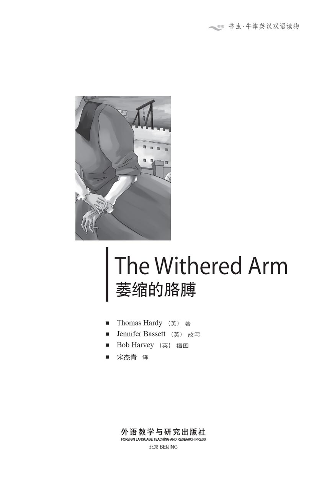
版权页
京权图字：01-2013-7820
Published by arrangement with Oxford University Press for sale in the People's Republic of China only and not for export therefrom. This edition is for sale in the mainland of China only, excluding Hong Kong SAR, Macao SAR and Taiwan.
© Oxford University Press 2008
Oxford is a registered trademark of Oxford University Press
图书在版编目（CIP）数据
萎缩的胳膊：英汉对照／（英）哈代（Hardy, T.）著；（英）巴西特（Bassett, J.）改写；（英）哈维（Harvey, B.）绘；宋杰青译．—北京：外语教学与研究出版社，2013.12
（书虫·牛津英汉双语读物）
书名原文：The withered arm
ISBN 978-7-5135-3933-3
Ⅰ．①萎… Ⅱ．①哈… ②巴… ③哈… ④宋… Ⅲ．①英语－汉语－对照读物②中篇小说－英国－现代 Ⅳ．①H319.4：I
中国版本图书馆CIP数据核字（2013）第309215号
出版人 蔡剑峰
责任编辑 谷 丰
执行编辑 张 帆
封面设计 蔡 颖
出版发行 外语教学与研究出版社
社 址 北京市西三环北路19号（100089）
网 址 http://www.fltrp.com
版 次 2014年1月第1版
书 号 ISBN 978-7-5135-3933-3
制售盗版必究 举报查实奖励
版权保护举报电话：（010）88817519
内容简介
内容简介
生活中有时候会有些奇怪的事情发生，没人能解释为什么。一扇门在夜里开了，却见不到人。一只冰冷的手掐住了你的脖子，你身边却没有人，天气也很暖和。你进了一间房子，里面都是人。你看不到他们，却能感受到他们的存在，他们在黑暗中等待。
罗达是农场里的工人。她高高的个子，有一双美丽的黑眼睛，每天工作很长时间，挣得却不多。格特鲁德不工作。她很漂亮，有一双小巧白皙的手，一副甜美的笑容，还有许多美丽的裙子。洛奇先生是农场主，拥有一栋很大的农舍，一座富庶的农场和很多良种奶牛。两个女人中哪个是洛奇农场主的妻子？农场主过去爱谁，现在爱谁，谁又是他儿子的母亲？
上面这些人里谁有一条萎缩的胳膊？一条可怜的、细细的、萎缩的胳膊，一条留有手指印迹的胳膊，一条一周周愈加纤瘦、枯槁的胳膊。胳膊上的印迹是从哪里来的？没人知道，也没人能解释。但人们都说，那是女巫留下的……
（本书属于哈代的非现实题材小说）
THE WITHERED ARM
Sometimes strange things happen, and nobody can explain why. A door opens in the night, but there is nobody there. A cold hand takes you by the neck, but you are alone, and it is a warm day. You go into a house, and it is full of people. You cannot see them, but you can feel them there, waiting in the dark.
Rhoda is a farm worker. She is tall, with beautiful dark eyes, and works long hours for not much money. Gertrude does not work. She is pretty, has small white hands, a sweet smile, and beautiful dresses. Mr Lodge is a farmer, with a big farmhouse, and many fine cows on his rich farm. Which of the two women is the wife of Farmer Lodge? Which woman did he love, which woman does he love, which woman is the mother of his son?
And which of these people has a withered arm? A poor, thin, withered arm, an arm with the marks of fingers on it, an arm that grows thinner and more withered, week by week. How did those marks get there? Nobody knows, nobody can explain them. But people say they are a witch's marks...
目录
1．The milkmaid and the wife
1
The milkmaid and the wife
It was six o'clock on a warm April evening, milking time for Farmer Lodge's eighty cows. They stood quietly in the dairy, and the milkmaids were all at work.
'They say Farmer Lodge is coming home with his new wife tomorrow,' said one milkmaid.
'Yes. And she's young and pretty, I hear,' a second girl said.
She looked past her cow to the other end of the dairy. There was another milkmaid there, a thin, older woman, about thirty years old.
The first girl looked at the older woman too. 'I'm sorry for her,' she said quietly to her friend.
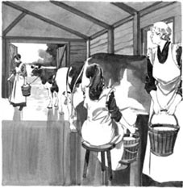
'I'm sorry for her,' the milkmaid said to her friend.
'Oh no,' said the second girl. 'That was years and years ago. Farmer Lodge never speaks to Rhoda Brook these days.'
When the milking was finished, the milkmaids left the dairy and went home. The thin woman, Rhoda Brook, did not walk to the village with the other girls. She went up the hill behind the farm to a little house near the trees. It was a poor house, of only two rooms, and the roof did not keep the rain out.
At the door of the house the woman met her son, a boy of about twelve, and they went inside.
'I heard something at the dairy today,' the woman said. 'Your father is bringing his young wife home tomorrow. I want you to go and look at her.'
'Yes, mother,' said the boy. 'Is father married then?'
'Yes... You can go into town and do my shopping for me. And when you see her, there or on the road, look at her carefully.'
'Yes, mother.'
'What is she like? I want to know. Is she tall, is she short? Are her eyes blue or brown or green? Look at the colour of her hair, the colour of her dress. And look at her hands. Does she have small white hands, or the hands of a milkmaid, a worker's hands? You must look at all these things, and tell me.'
'Yes, mother,' the boy said again. He took a piece of bread from the table and began to eat it.
His mother said nothing more, but turned her thin, pale face to the open door. Her beautiful dark eyes stared out at the trees, seeing and not seeing.
The next evening was warm and sunny. The road from the town to the farm went up and down a number of hills, and near the top of one big hill the boy saw a carriage behind him. It was Farmer Lodge with his new wife. She was a pretty young thing, much younger than her husband, with a sweet, innocent face.
The boy carried a heavy bag, and was happy to stop and stare for a minute. The carriage came slowly up the hill, and the boy took a good long look at the farmer's wife. His eyes never left her face.
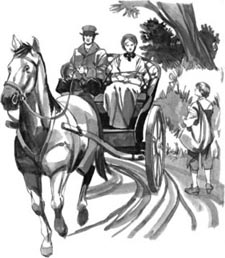
The boy took a good long look at the farmer's wife.
The farmer did not look at the boy once, and at the top of the hill the carriage went faster, leaving the boy behind.
'How that poor boy stared at me!' said the young wife.
'Yes, my love. I saw that,' the farmer said.
'Is he a boy from the village?'
'No. I think he lives with his mother on one of these hills.'
'He knows you, then.'
'Of course. And everyone is going to stare at you at first, my pretty Gertrude.'
'Yes, I know. But that poor boy had a very heavy bag. Perhaps he wanted us to help him with the bag.'
'Oh, these country boys can carry anything,' said her husband. 'They do it all the time.'
The carriage went quickly on. After a time the boy left the road and went up the hill to his mother's house.
She was home before him. She took the heavy bag from him and began to take the things out.
'Well, did you see her?'
'Yes. I had a good look at her on the road.'
'And what is she like?'
'She's nice.'
'Is she young?'
'Well, she's older than me.'
'Of course she is. But is she older than me?'
'No, she's younger.'
'Ah. What colour is her hair?'
'It's a brown colour, and her face is very pretty.'
'Are her eyes dark?'
'No, they're blue, and her mouth is very nice and red, and when she smiles, you can see white teeth.'
'Is she tall?' said the woman, a little angrily.
'I couldn't see. She was in the carriage.'
'Then tomorrow you must go to church. Go early, before she and Mr Lodge arrive, and watch her when she walks in. Then come home and tell me.'
'Very well, mother. But why don't you go and look at her?'
'Never! I don't want to see her. She was with Mr Lodge, of course. Did he look at you or speak to you?'
'No.'
The next day the boy went to church, and waited and watched. When Mr and Mrs Lodge arrived, everybody – not just the boy – stared at the new wife with interest.
When the boy reached home, his mother said, 'Well?'
'She's not tall. She's short,' the boy said.
'Ah!' said his mother, pleased.
'But she's very pretty – very. She had a beautiful white dress on, and it made a lot of noise when she moved. Mr Lodge looked very happy with her.'
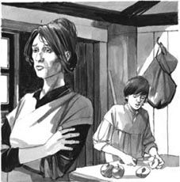
'Mr Lodge looked very happy with her,' the boy said.
'No more now,' said the woman. 'You can tell me more later.'
In the next days, Rhoda Brook heard more and more from her son about the new wife. The boy often saw Mrs Lodge around the farmhouse, but his mother never saw her, and never went near the farmhouse.
At the dairy the other milkmaids talked a lot about the new wife. They usually stopped when Rhoda was near, but she heard some of it. She remembered everything, and forgot nothing.
And slowly Rhoda Brook made a picture in her head of the young Mrs Lodge – a picture as good, as true as a photograph.
milkmaid n. a woman who works in a dairy, milking cows 挤奶女工
dairy n. a place where cows are milked, milk is kept, etc 奶牛场
thin adj. not fat 瘦的
village n. a very small town in the countryside 村庄，村子
poor adj. not good 破旧的
married adj. having a husband or a wife 结婚的，已婚的
pale adj. with no colour in the face（脸色）苍白的
stare v. to look at something for a long time 凝视，注视
carriage n. a kind of 'car' that is pulled by horses 马车
sweet adj. kind and gentle 甜美的，温柔善良的
innocent adj. not having much experience of the bad things in the world 无邪的
heavy adj. difficult to move or carry 沉重的
reach v. to arrive at a place 到达
move v. to change from one position to another 移动
farmhouse n. the main house on a farm, where the farmer lives 农舍
1
挤奶女工和夫人
这是个温暖的四月傍晚，六点钟是给洛奇农场主的80头奶牛挤奶的时间。奶牛们静静地站在棚中，挤奶女工们都在忙活。
“听说洛奇场主明天要跟他的新夫人回家来了。”其中一个挤奶女工说。
“是的。而且我听说她又年轻又漂亮。”另一个女孩儿说。
她的目光越过眼前的奶牛，望向奶牛场的另一头。那边还有一个挤奶女工，瘦瘦的，年龄稍大，三十岁上下。
第一个说话的女孩儿也在望着那个年纪大些的女工。“我真替她难过。”她悄悄地跟自己的同伴说。
“嗐，算啦，”第二个女孩儿说，“那都是多少年前的事了。现在洛奇场主从来不跟罗达·布鲁克说话。”
挤奶工作结束后，女工们离开奶牛场回家了。那个瘦瘦的女人罗达·布鲁克没有跟其他女孩儿一起走回村子。她走上农场后面的小山，来到树旁的一幢小房子跟前。房子很破旧，只有两间屋，屋顶已经遮不了雨。
女人在门口碰到了她12岁上下的儿子，两人一起进了屋。
“我今天在奶牛场听说了件事情。”女人说，“你爸爸明天要带着他年轻的妻子回家来了。我想让你去看看她。”
“好的，妈妈。”男孩儿说，“这么说爸爸是结婚了？”
“是啊……你可以到镇子上去，替我买点儿东西。在镇子上或是路上碰到她时，仔细看看她。”
“好的，妈妈。”
“我想知道她长什么样儿。高还是矮？眼睛是蓝色的、棕色的，还是绿色的？看看她头发的颜色，裙子的颜色。再看看她的手，看她长了一双小巧白皙的手，还是一双挤奶女工的、劳动的手？这些都要看看，然后告诉我。”
“好的，妈妈。”男孩儿再次答应。他从桌上拿起一片面包，吃了起来。
他的母亲没再说别的，只是把她瘦削苍白的脸转向敞开着的门。她美丽的黑眼睛凝望着门外的树木，似乎在看，又似乎没在看。
第二天傍晚，天气晴朗又暖和。从镇子到农场的路要上上下下翻过几座山。在快走到一个高高坡顶的时候，男孩儿看到他身后有一辆马车。车里坐的是洛奇农场主和他的新婚妻子。那女人很年轻，比她丈夫年轻得多，面容甜美无邪。
男孩儿背着沉重的包，很高兴能停下来看上一会儿。马车缓缓地爬上山来，让他有机会好好端详了一番农场主的妻子。他的眼睛一直盯着她的脸。
农场主看都没看男孩儿一眼。到了山顶以后，马车加快了速度，男孩儿被甩在了后面。
“那个可怜的男孩儿怎么那样盯着我！”年轻的妻子说。
“哦，亲爱的，我看到了。”农场主说。
“他是村子里面的孩子吗？”
“不是。我想他跟他妈妈一起住在这里的某座小山上。”
“那他认识你啦。”
“当然认识。谁第一次见到你都会盯着你看的，我美丽的格特鲁德。”
“是，这我知道。可是那可怜的孩子背着那么重的包，说不定他是想让我们帮他带一程呢。”
“放心吧，这些乡下的男孩子什么都扛得动。”她的丈夫说，“他们整天都在做这些活儿。”
马车继续向前疾驰。过了一会儿，男孩儿离开了大路，走上小山，回到了母亲的房子。
他母亲比他先到了家。她从孩子肩上取下沉重的包，开始把里面的东西往外拿。
“我说，你见到她了吗？”
“见到了。我在路上好好瞅了瞅她。”
“她长什么样儿？”
“挺好看的。”
“年轻吗？”
“哦，至少比我大。”
“她当然比你要大。我是问她比我大吗？”
“不，比你年轻。”
“哦。她的头发是什么颜色的？”
“是棕色的。她长得非常好看。”
“她的眼睛是黑色的吗？”
“不是，是蓝色的。她的嘴巴很漂亮，红红的，一笑起来就露出白白的牙齿。”
“她个子高吗？”女人问，语气有些气恼。
“我看不出来。她坐在马车里。”
“那你明天得去趟教堂。早早地去，抢在她和洛奇先生之前到那儿，等她走进来的时候看看她，然后回来告诉我。”
“完全可以，妈妈。可是为什么你不去看看她呢？”
“我不去！我不想见到她。她刚才肯定是跟洛奇先生在一起的。洛奇先生看你了吗？跟你说什么了吗？”
“没有。”
第二天，男孩儿去了教堂，边等边张望。当洛奇夫妇到达的时候，每个人——不仅仅是男孩儿——都饶有兴致地盯着那位新夫人。
等男孩儿回到家里，他母亲问：“怎么样？”
“她个子不高，挺矮的。”男孩儿说。
“哦！”他母亲开心了一点儿。
“可是她非常漂亮——非常。她穿了一条好看的白裙子，一动就窸窸窣窣地响。洛奇先生跟她在一起看起来非常幸福。”
“就说到这儿吧！”女人说，“你改天再跟我说其他的。”
接下来的几天里，罗达·布鲁克从儿子那里听到了越来越多关于那位新夫人的情况。男孩儿经常在农舍附近看到洛奇夫人，但他母亲从来没见过她，也从来不去农舍附近。
在奶牛场，其他的挤奶女工经常谈论这位新夫人。罗达在附近的时候，她们通常会停住不说，可罗达还是听到了些只言片语。她把听到的话都记在了脑子里，一句都没忘掉。
慢慢地，罗达·布鲁克在她的头脑中勾画出了一幅年轻的洛奇夫人的画像——一幅跟照片一样真实、生动的画像。
挤奶女工和夫人
1
The milkmaid and the wife
It was six o'clock on a warm April evening, milking time for Farmer Lodge's eighty cows. They stood quietly in the dairy, and the milkmaids were all at work.
'They say Farmer Lodge is coming home with his new wife tomorrow,' said one milkmaid.
'Yes. And she's young and pretty, I hear,' a second girl said.
She looked past her cow to the other end of the dairy. There was another milkmaid there, a thin, older woman, about thirty years old.
The first girl looked at the older woman too. 'I'm sorry for her,' she said quietly to her friend.
'I'm sorry for her,' the milkmaid said to her friend.
'Oh no,' said the second girl. 'That was years and years ago. Farmer Lodge never speaks to Rhoda Brook these days.'
When the milking was finished, the milkmaids left the dairy and went home. The thin woman, Rhoda Brook, did not walk to the village with the other girls. She went up the hill behind the farm to a little house near the trees. It was a poor house, of only two rooms, and the roof did not keep the rain out.
At the door of the house the woman met her son, a boy of about twelve, and they went inside.
'I heard something at the dairy today,' the woman said. 'Your father is bringing his young wife home tomorrow. I want you to go and look at her.'
'Yes, mother,' said the boy. 'Is father married then?'
'Yes... You can go into town and do my shopping for me. And when you see her, there or on the road, look at her carefully.'
'Yes, mother.'
'What is she like? I want to know. Is she tall, is she short? Are her eyes blue or brown or green? Look at the colour of her hair, the colour of her dress. And look at her hands. Does she have small white hands, or the hands of a milkmaid, a worker's hands? You must look at all these things, and tell me.'
'Yes, mother,' the boy said again. He took a piece of bread from the table and began to eat it.
His mother said nothing more, but turned her thin, pale face to the open door. Her beautiful dark eyes stared out at the trees, seeing and not seeing.
The next evening was warm and sunny. The road from the town to the farm went up and down a number of hills, and near the top of one big hill the boy saw a carriage behind him. It was Farmer Lodge with his new wife. She was a pretty young thing, much younger than her husband, with a sweet, innocent face.
The boy carried a heavy bag, and was happy to stop and stare for a minute. The carriage came slowly up the hill, and the boy took a good long look at the farmer's wife. His eyes never left her face.
The boy took a good long look at the farmer's wife.
The farmer did not look at the boy once, and at the top of the hill the carriage went faster, leaving the boy behind.
'How that poor boy stared at me!' said the young wife.
'Yes, my love. I saw that,' the farmer said.
'Is he a boy from the village?'
'No. I think he lives with his mother on one of these hills.'
'He knows you, then.'
'Of course. And everyone is going to stare at you at first, my pretty Gertrude.'
'Yes, I know. But that poor boy had a very heavy bag. Perhaps he wanted us to help him with the bag.'
'Oh, these country boys can carry anything,' said her husband. 'They do it all the time.'
The carriage went quickly on. After a time the boy left the road and went up the hill to his mother's house.
She was home before him. She took the heavy bag from him and began to take the things out.
'Well, did you see her?'
'Yes. I had a good look at her on the road.'
'And what is she like?'
'She's nice.'
'Is she young?'
'Well, she's older than me.'
'Of course she is. But is she older than me?'
'No, she's younger.'
'Ah. What colour is her hair?'
'It's a brown colour, and her face is very pretty.'
'Are her eyes dark?'
'No, they're blue, and her mouth is very nice and red, and when she smiles, you can see white teeth.'
'Is she tall?' said the woman, a little angrily.
'I couldn't see. She was in the carriage.'
'Then tomorrow you must go to church. Go early, before she and Mr Lodge arrive, and watch her when she walks in. Then come home and tell me.'
'Very well, mother. But why don't you go and look at her?'
'Never! I don't want to see her. She was with Mr Lodge, of course. Did he look at you or speak to you?'
'No.'
The next day the boy went to church, and waited and watched. When Mr and Mrs Lodge arrived, everybody – not just the boy – stared at the new wife with interest.
When the boy reached home, his mother said, 'Well?'
'She's not tall. She's short,' the boy said.
'Ah!' said his mother, pleased.
'But she's very pretty – very. She had a beautiful white dress on, and it made a lot of noise when she moved. Mr Lodge looked very happy with her.'
'Mr Lodge looked very happy with her,' the boy said.
'No more now,' said the woman. 'You can tell me more later.'
In the next days, Rhoda Brook heard more and more from her son about the new wife. The boy often saw Mrs Lodge around the farmhouse, but his mother never saw her, and never went near the farmhouse.
At the dairy the other milkmaids talked a lot about the new wife. They usually stopped when Rhoda was near, but she heard some of it. She remembered everything, and forgot nothing.
And slowly Rhoda Brook made a picture in her head of the young Mrs Lodge – a picture as good, as true as a photograph.
milkmaid n. a woman who works in a dairy, milking cows 挤奶女工
dairy n. a place where cows are milked, milk is kept, etc 奶牛场
thin adj. not fat 瘦的
village n. a very small town in the countryside 村庄，村子
poor adj. not good 破旧的
married adj. having a husband or a wife 结婚的，已婚的
pale adj. with no colour in the face（脸色）苍白的
stare v. to look at something for a long time 凝视，注视
carriage n. a kind of 'car' that is pulled by horses 马车
sweet adj. kind and gentle 甜美的，温柔善良的
innocent adj. not having much experience of the bad things in the world 无邪的
heavy adj. difficult to move or carry 沉重的
reach v. to arrive at a place 到达
move v. to change from one position to another 移动
farmhouse n. the main house on a farm, where the farmer lives 农舍
1
挤奶女工和夫人
这是个温暖的四月傍晚，六点钟是给洛奇农场主的80头奶牛挤奶的时间。奶牛们静静地站在棚中，挤奶女工们都在忙活。
“听说洛奇场主明天要跟他的新夫人回家来了。”其中一个挤奶女工说。
“是的。而且我听说她又年轻又漂亮。”另一个女孩儿说。
她的目光越过眼前的奶牛，望向奶牛场的另一头。那边还有一个挤奶女工，瘦瘦的，年龄稍大，三十岁上下。
第一个说话的女孩儿也在望着那个年纪大些的女工。“我真替她难过。”她悄悄地跟自己的同伴说。
“嗐，算啦，”第二个女孩儿说，“那都是多少年前的事了。现在洛奇场主从来不跟罗达·布鲁克说话。”
挤奶工作结束后，女工们离开奶牛场回家了。那个瘦瘦的女人罗达·布鲁克没有跟其他女孩儿一起走回村子。她走上农场后面的小山，来到树旁的一幢小房子跟前。房子很破旧，只有两间屋，屋顶已经遮不了雨。
女人在门口碰到了她12岁上下的儿子，两人一起进了屋。
“我今天在奶牛场听说了件事情。”女人说，“你爸爸明天要带着他年轻的妻子回家来了。我想让你去看看她。”
“好的，妈妈。”男孩儿说，“这么说爸爸是结婚了？”
“是啊……你可以到镇子上去，替我买点儿东西。在镇子上或是路上碰到她时，仔细看看她。”
“好的，妈妈。”
“我想知道她长什么样儿。高还是矮？眼睛是蓝色的、棕色的，还是绿色的？看看她头发的颜色，裙子的颜色。再看看她的手，看她长了一双小巧白皙的手，还是一双挤奶女工的、劳动的手？这些都要看看，然后告诉我。”
“好的，妈妈。”男孩儿再次答应。他从桌上拿起一片面包，吃了起来。
他的母亲没再说别的，只是把她瘦削苍白的脸转向敞开着的门。她美丽的黑眼睛凝望着门外的树木，似乎在看，又似乎没在看。
第二天傍晚，天气晴朗又暖和。从镇子到农场的路要上上下下翻过几座山。在快走到一个高高坡顶的时候，男孩儿看到他身后有一辆马车。车里坐的是洛奇农场主和他的新婚妻子。那女人很年轻，比她丈夫年轻得多，面容甜美无邪。
男孩儿背着沉重的包，很高兴能停下来看上一会儿。马车缓缓地爬上山来，让他有机会好好端详了一番农场主的妻子。他的眼睛一直盯着她的脸。
农场主看都没看男孩儿一眼。到了山顶以后，马车加快了速度，男孩儿被甩在了后面。
“那个可怜的男孩儿怎么那样盯着我！”年轻的妻子说。
“哦，亲爱的，我看到了。”农场主说。
“他是村子里面的孩子吗？”
“不是。我想他跟他妈妈一起住在这里的某座小山上。”
“那他认识你啦。”
“当然认识。谁第一次见到你都会盯着你看的，我美丽的格特鲁德。”
“是，这我知道。可是那可怜的孩子背着那么重的包，说不定他是想让我们帮他带一程呢。”
“放心吧，这些乡下的男孩子什么都扛得动。”她的丈夫说，“他们整天都在做这些活儿。”
马车继续向前疾驰。过了一会儿，男孩儿离开了大路，走上小山，回到了母亲的房子。
他母亲比他先到了家。她从孩子肩上取下沉重的包，开始把里面的东西往外拿。
“我说，你见到她了吗？”
“见到了。我在路上好好瞅了瞅她。”
“她长什么样儿？”
“挺好看的。”
“年轻吗？”
“哦，至少比我大。”
“她当然比你要大。我是问她比我大吗？”
“不，比你年轻。”
“哦。她的头发是什么颜色的？”
“是棕色的。她长得非常好看。”
“她的眼睛是黑色的吗？”
“不是，是蓝色的。她的嘴巴很漂亮，红红的，一笑起来就露出白白的牙齿。”
“她个子高吗？”女人问，语气有些气恼。
“我看不出来。她坐在马车里。”
“那你明天得去趟教堂。早早地去，抢在她和洛奇先生之前到那儿，等她走进来的时候看看她，然后回来告诉我。”
“完全可以，妈妈。可是为什么你不去看看她呢？”
“我不去！我不想见到她。她刚才肯定是跟洛奇先生在一起的。洛奇先生看你了吗？跟你说什么了吗？”
“没有。”
第二天，男孩儿去了教堂，边等边张望。当洛奇夫妇到达的时候，每个人——不仅仅是男孩儿——都饶有兴致地盯着那位新夫人。
等男孩儿回到家里，他母亲问：“怎么样？”
“她个子不高，挺矮的。”男孩儿说。
“哦！”他母亲开心了一点儿。
“可是她非常漂亮——非常。她穿了一条好看的白裙子，一动就窸窸窣窣地响。洛奇先生跟她在一起看起来非常幸福。”
“就说到这儿吧！”女人说，“你改天再跟我说其他的。”
接下来的几天里，罗达·布鲁克从儿子那里听到了越来越多关于那位新夫人的情况。男孩儿经常在农舍附近看到洛奇夫人，但他母亲从来没见过她，也从来不去农舍附近。
在奶牛场，其他的挤奶女工经常谈论这位新夫人。罗达在附近的时候，她们通常会停住不说，可罗达还是听到了些只言片语。她把听到的话都记在了脑子里，一句都没忘掉。
慢慢地，罗达·布鲁克在她的头脑中勾画出了一幅年轻的洛奇夫人的画像——一幅跟照片一样真实、生动的画像。
2．The dream
2
The dream
One night, two or three weeks later, when the boy was in bed, Rhoda Brook sat by the dying fire in her little house. She stared at the fire for a long time, but she saw only the picture in her head of the new wife. At last, tired from her day's work, she went to bed.
But the picture of Gertrude Lodge did not go away. When Rhoda slept, the young wife was still there in Rhoda's dreams. She sat on Rhoda's body in the bed, staring into Rhoda's face. Her blue eyes were cold, and with a cruel laugh, she put her left hand in front of Rhoda's eyes. There, on the third finger, was her wedding-ring. And the phantom of Gertrude Lodge laughed again.
Rhoda turned this way and that way, but the phantom was still there. It sat, heavier and heavier, on Rhoda's body, and now Rhoda could not move. Always in her ears was that cruel laugh, and always in front of her eyes was that left hand with its wedding-ring.
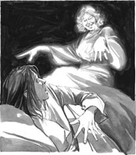
Always in her ears was that cruel laugh, and always in front of her eyes was that left hand with its wedding-ring.
At last, half-dead with terror, Rhoda suddenly put out her right hand, took hold of the phantom's left arm, and pulled it hard.
The phantom fell off the bed onto the floor, and Rhoda sat up.
'Dear God!' she cried. She felt cold, so cold. 'That was not a dream – she was here!'
She could still feel the young woman's arm under her hand – a warm, living arm. She looked on the floor for the woman's body, but there was nothing there.
Rhoda Brook slept no more that night, and at the dairy early the next morning, she looked pale and ill. She could not forget the feel of that arm under her hand.
When she came home for breakfast, her son asked her,'What was that noise in your room last night, mother? Did you fall off the bed?'
'Noise? What time did you hear it?'
'About two o'clock. But what was it, mother? Something fell, I heard it. Was it you?'
Rhoda did not answer, and after breakfast she began to do her work in the house. At about midday she heard something, and looked out of the window. At the bottom of the garden stood a woman – the woman from her dream. Rhoda stood still, and stared.
The boy came to look out of the window too.
'Oh, there's Mrs Lodge,' he said. 'She told me—'
'Told you?' said his mother. She looked angry. 'Why did you speak to her? I told you not to.'
'She spoke to me first. I met her in the road.'
'When was this?'
'Yesterday.'
'What did you tell her?'
'Nothing. She began to talk to me, and then she saw my old shoes. She said, "Do they keep the rain out?" And I said, "No, they don't, but mother and I have no money for new shoes." Then she said, "I can give you some better shoes." She's bringing them now, I think. Perhaps they're in her bag. She's very nice, mother – she gives things to lots of people.'
By now Mrs Lodge was at the door. Rhoda wanted to run away, but there was no back door in her little house. So she waited, and the boy ran to open the door.
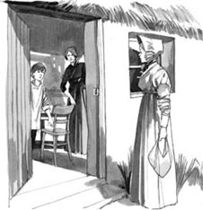
The boy ran to open the door.
'This is the right house then,' said Mrs Lodge, smiling at the boy. 'And this is your mother, is it?'
The face and body were the same as those of the phantom in Rhoda's dream, but there was nothing cruel in this face. The blue eyes were warm, and the smile was sweet and kind.
The young woman took the shoes out of her bag, and gave them to the boy. She smiled and talked in a warm and friendly way.
'How kind she is!' thought Rhoda. 'How young and sweet and innocent! Why did I have that bad dream about her? She's a friend, not an enemy.'
Two days later Mrs Lodge came again, with a new shirt for the boy, and twelve days after that she visited Rhoda a third time. The boy was out that day.
'I like walking up here on the hill,' Mrs Lodge told Rhoda. 'And your house is the only one up here.'
They talked about the weather and the village, then Mrs Lodge got up to leave. 'Are you well, Rhoda?' she asked. 'You look pale.'
'Oh, I'm always pale,' said Rhoda. 'But what about you, Mrs Lodge? Are you well?'
'Yes, I am, but... there is something... It's nothing very bad, but I don't understand it.'
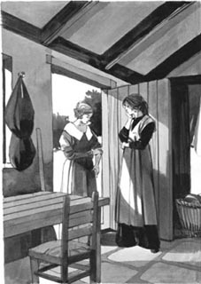
'There is something... It's nothing very bad, but I don't understand it,' said Mrs Lodge.
She uncovered her left hand and arm. There were marks on the arm, yellowy-brown marks, like marks made by fingers. Rhoda stared at them.
'How did it happen?' she asked.
'I don't know,' said Mrs Lodge. 'One night, when I was in bed, I had a dream... and then suddenly, my arm hurt very badly. Perhaps I hit it on something in the daytime, but I don't remember it.' She laughed. 'My dear husband says it's nothing very much, and he's right, of course.'
'Yes... Which night was that?' said Rhoda.
Mrs Lodge thought for a moment. 'It was two weeks ago today. It was two o'clock in the night – I remember, because I heard the clock.'
It was the same night, the same hour, as Rhoda's dream of the phantom. Rhoda remembered the terror of it, and felt cold.
'How can this be?' she thought, when Mrs Lodge left. 'Did I do that? But why? She is innocent and kind – I don't want to hurt her. And how can a thing like that happen? Only witches can do things like that...'
dream n. a picture in your head when you are sleeping 梦
cruel adj. not kind; giving pain or unhappiness to other people 残忍的，残酷的
wedding-ring n. a ring on the third finger, to show you are married 婚戒
terror n. very great fear 恐惧
phantom n. a ghost; a 'person' who is not real 鬼魂，幻影
fall v. to go down quickly; to drop 跌倒，摔落
ill adj. not in good health 生病的；不适的
noise n. a sound of any kind, especially a disagreeable one 声音，响声；嘈杂声
midday n. the middle of the day 正午
bottom n. the lower side of anything 底部，尽头
run away to leave a place, especially secrectly, in order to escape from someone or something 逃跑
kind adj. friendly and helpful 好心的，友善的
enemy n. a person who hates you; the opposite of 'friend' 敌人
uncover v. to remove the cover from something 露出
2
梦
两三周后的一天夜里，男孩儿睡下以后，罗达·布鲁克坐在她那小房子里即将熄灭的炉火旁。她朝炉火望了很长时间，脑子里却只有那位新夫人的影像。最后，累了一天的她终于上床入睡了。
可是格特鲁德·洛奇的影像却没有离去。罗达睡着之后，那位年轻夫人又出现在她的梦中。她来到床边，坐在罗达身上，死死盯着罗达的脸。她蓝色的眼睛冷冰冰的，残忍地笑着，并把左手伸到罗达眼前。那只手的无名指上，戴着她的结婚戒指。接着，格特鲁德·洛奇的幻影再一次笑了起来。
罗达辗转反侧，可幻影一直挥之不去。它坐在罗达身上，越来越重，现在罗达已经动弹不得了。她的耳朵里灌满了那残忍的笑声，眼前一直晃动着那只戴着结婚戒指的左手。
终于，吓得半死的罗达猛地伸出右手，抓住了幻影的左臂，用力一拉。
幻影从床上摔到地板上，罗达也坐了起来。
“天啊！”她叫道。她感到冷，特别冷。“这不是梦——她刚才就在这儿！”
她仍能感受到那年轻女人的胳膊握在她的手中——那是一只温热的、活生生的胳膊。她望向地板，寻找那女人的身体，但地上什么都没有。
那天夜里，罗达·布鲁克再也睡不着了。第二天一大早在奶牛场里，她看起来面色苍白，病恹恹的。她忘不了手中抓着那只胳膊的感觉。
回家吃早饭的时候，儿子问她：“妈妈，昨天夜里你屋子里的响动是怎么回事？是你从床上掉下来了吗？”
“响动？你什么时候听到的？”
“大概两点钟。到底是怎么回事，妈妈？什么东西掉下来了，我听到了。是你吗？”
罗达没有回答。吃过早饭，她开始做家务。大约正午时分，她听到有声音，就向窗外望了望。有个女人站在花园的尽头——正是她梦里的女人。罗达动也不动地站着，注视着她。
男孩儿也凑过来，向窗外望去。
“哦，那是洛奇夫人。”他说，“她跟我说——”
“她跟你说？”他母亲说。她看上去生气了。“你为什么跟她说话？我告诉过你不要跟她说话的。”
“是她先跟我说话的。我在路上碰到她来着。”
“什么时候？”
“昨天。”
“你跟她说什么了？”
“没说什么。她跟我聊起天来，后来看到我的旧鞋子，就问：‘这鞋能挡雨吗？’我说：‘不行，挡不了。可我和妈妈没钱买新鞋子。’然后她说：‘我可以给你双好点儿的鞋子。’我想她现在是把鞋子带来了，可能就在她的袋子里。她人很好，妈妈——她给很多人送过东西。”
这时候，洛奇夫人已来到了门前。罗达想跑掉，可她家的小房子没有后门，她只得等在那里。男孩儿跑去开门。
“看来就是这座房子啦。”洛奇夫人冲男孩儿微笑着说，“这是你妈妈，对吗？”
这面容，这身材，跟罗达梦里的幻影一模一样，只是她的脸上没有半点儿残忍的样子。她那蓝色的眼睛里流露着温暖，她的微笑甜美又善良。
年轻女人从包里拿出鞋子，递给了男孩儿。她微笑着，说话的语气温和而友善。
“多好的一个人啊！”罗达心想，“那么年轻，那么可爱，那么纯真！为什么我会做那个关于她的噩梦？她是朋友，不是敌人啊。”
两天之后，洛奇夫人又给男孩儿送来一件新衬衫。十二天之后，她第三次造访了罗达的家。男孩儿那天没在家。
“我喜欢走到山坡上来。”洛奇夫人对罗达说，“而你家是这地方唯一的房子。”
她们聊了聊天气和村里的事，之后洛奇夫人起身告辞。“你身体好吗，罗达？”她问，“你的脸色看起来很苍白。”
“哦，我脸色总是苍白的。”罗达说，“您呢，洛奇夫人？您身体好吗？”
“我还好，只不过……有点儿……不是什么很严重的问题，可我不明白是怎么回事。”
她挽起衣袖，露出左手和左臂。她的胳膊上有一些黄褐色的印迹，像是被手指抓过似的。罗达盯着这些印迹。
“这是怎么回事？”她问。
“我不知道。”洛奇夫人说。“一天夜里，我睡觉的时候做了一个梦……接着，我的胳膊突然就疼得厉害。或许我白天撞到了什么东西，自己没察觉。”她笑着说，“我亲爱的丈夫说没什么大不了的，我肯定他说得对。”
“对，没事……这是哪天夜里的事？”罗达问。
洛奇夫人想了一会儿。“两周以前的今天。时间是夜里两点——我记得，因为我听到了钟声。”
这件事发生在罗达梦到幻影的同一天夜里，同一个时间。罗达记起了那可怕的梦，感到浑身发冷。
“怎么会这样？”洛奇夫人离开后，她想，“确实是我做的吗？可这是为什么？她那么纯真，那么善良——我不想伤害她。怎么会发生这样的事情？这种事只有女巫才可以做到啊……”
梦
2
The dream
One night, two or three weeks later, when the boy was in bed, Rhoda Brook sat by the dying fire in her little house. She stared at the fire for a long time, but she saw only the picture in her head of the new wife. At last, tired from her day's work, she went to bed.
But the picture of Gertrude Lodge did not go away. When Rhoda slept, the young wife was still there in Rhoda's dreams. She sat on Rhoda's body in the bed, staring into Rhoda's face. Her blue eyes were cold, and with a cruel laugh, she put her left hand in front of Rhoda's eyes. There, on the third finger, was her wedding-ring. And the phantom of Gertrude Lodge laughed again.
Rhoda turned this way and that way, but the phantom was still there. It sat, heavier and heavier, on Rhoda's body, and now Rhoda could not move. Always in her ears was that cruel laugh, and always in front of her eyes was that left hand with its wedding-ring.
Always in her ears was that cruel laugh, and always in front of her eyes was that left hand with its wedding-ring.
At last, half-dead with terror, Rhoda suddenly put out her right hand, took hold of the phantom's left arm, and pulled it hard.
The phantom fell off the bed onto the floor, and Rhoda sat up.
'Dear God!' she cried. She felt cold, so cold. 'That was not a dream – she was here!'
She could still feel the young woman's arm under her hand – a warm, living arm. She looked on the floor for the woman's body, but there was nothing there.
Rhoda Brook slept no more that night, and at the dairy early the next morning, she looked pale and ill. She could not forget the feel of that arm under her hand.
When she came home for breakfast, her son asked her,'What was that noise in your room last night, mother? Did you fall off the bed?'
'Noise? What time did you hear it?'
'About two o'clock. But what was it, mother? Something fell, I heard it. Was it you?'
Rhoda did not answer, and after breakfast she began to do her work in the house. At about midday she heard something, and looked out of the window. At the bottom of the garden stood a woman – the woman from her dream. Rhoda stood still, and stared.
The boy came to look out of the window too.
'Oh, there's Mrs Lodge,' he said. 'She told me—'
'Told you?' said his mother. She looked angry. 'Why did you speak to her? I told you not to.'
'She spoke to me first. I met her in the road.'
'When was this?'
'Yesterday.'
'What did you tell her?'
'Nothing. She began to talk to me, and then she saw my old shoes. She said, "Do they keep the rain out?" And I said, "No, they don't, but mother and I have no money for new shoes." Then she said, "I can give you some better shoes." She's bringing them now, I think. Perhaps they're in her bag. She's very nice, mother – she gives things to lots of people.'
By now Mrs Lodge was at the door. Rhoda wanted to run away, but there was no back door in her little house. So she waited, and the boy ran to open the door.
The boy ran to open the door.
'This is the right house then,' said Mrs Lodge, smiling at the boy. 'And this is your mother, is it?'
The face and body were the same as those of the phantom in Rhoda's dream, but there was nothing cruel in this face. The blue eyes were warm, and the smile was sweet and kind.
The young woman took the shoes out of her bag, and gave them to the boy. She smiled and talked in a warm and friendly way.
'How kind she is!' thought Rhoda. 'How young and sweet and innocent! Why did I have that bad dream about her? She's a friend, not an enemy.'
Two days later Mrs Lodge came again, with a new shirt for the boy, and twelve days after that she visited Rhoda a third time. The boy was out that day.
'I like walking up here on the hill,' Mrs Lodge told Rhoda. 'And your house is the only one up here.'
They talked about the weather and the village, then Mrs Lodge got up to leave. 'Are you well, Rhoda?' she asked. 'You look pale.'
'Oh, I'm always pale,' said Rhoda. 'But what about you, Mrs Lodge? Are you well?'
'Yes, I am, but... there is something... It's nothing very bad, but I don't understand it.'
'There is something... It's nothing very bad, but I don't understand it,' said Mrs Lodge.
She uncovered her left hand and arm. There were marks on the arm, yellowy-brown marks, like marks made by fingers. Rhoda stared at them.
'How did it happen?' she asked.
'I don't know,' said Mrs Lodge. 'One night, when I was in bed, I had a dream... and then suddenly, my arm hurt very badly. Perhaps I hit it on something in the daytime, but I don't remember it.' She laughed. 'My dear husband says it's nothing very much, and he's right, of course.'
'Yes... Which night was that?' said Rhoda.
Mrs Lodge thought for a moment. 'It was two weeks ago today. It was two o'clock in the night – I remember, because I heard the clock.'
It was the same night, the same hour, as Rhoda's dream of the phantom. Rhoda remembered the terror of it, and felt cold.
'How can this be?' she thought, when Mrs Lodge left. 'Did I do that? But why? She is innocent and kind – I don't want to hurt her. And how can a thing like that happen? Only witches can do things like that...'
dream n. a picture in your head when you are sleeping 梦
cruel adj. not kind; giving pain or unhappiness to other people 残忍的，残酷的
wedding-ring n. a ring on the third finger, to show you are married 婚戒
terror n. very great fear 恐惧
phantom n. a ghost; a 'person' who is not real 鬼魂，幻影
fall v. to go down quickly; to drop 跌倒，摔落
ill adj. not in good health 生病的；不适的
noise n. a sound of any kind, especially a disagreeable one 声音，响声；嘈杂声
midday n. the middle of the day 正午
bottom n. the lower side of anything 底部，尽头
run away to leave a place, especially secrectly, in order to escape from someone or something 逃跑
kind adj. friendly and helpful 好心的，友善的
enemy n. a person who hates you; the opposite of 'friend' 敌人
uncover v. to remove the cover from something 露出
2
梦
两三周后的一天夜里，男孩儿睡下以后，罗达·布鲁克坐在她那小房子里即将熄灭的炉火旁。她朝炉火望了很长时间，脑子里却只有那位新夫人的影像。最后，累了一天的她终于上床入睡了。
可是格特鲁德·洛奇的影像却没有离去。罗达睡着之后，那位年轻夫人又出现在她的梦中。她来到床边，坐在罗达身上，死死盯着罗达的脸。她蓝色的眼睛冷冰冰的，残忍地笑着，并把左手伸到罗达眼前。那只手的无名指上，戴着她的结婚戒指。接着，格特鲁德·洛奇的幻影再一次笑了起来。
罗达辗转反侧，可幻影一直挥之不去。它坐在罗达身上，越来越重，现在罗达已经动弹不得了。她的耳朵里灌满了那残忍的笑声，眼前一直晃动着那只戴着结婚戒指的左手。
终于，吓得半死的罗达猛地伸出右手，抓住了幻影的左臂，用力一拉。
幻影从床上摔到地板上，罗达也坐了起来。
“天啊！”她叫道。她感到冷，特别冷。“这不是梦——她刚才就在这儿！”
她仍能感受到那年轻女人的胳膊握在她的手中——那是一只温热的、活生生的胳膊。她望向地板，寻找那女人的身体，但地上什么都没有。
那天夜里，罗达·布鲁克再也睡不着了。第二天一大早在奶牛场里，她看起来面色苍白，病恹恹的。她忘不了手中抓着那只胳膊的感觉。
回家吃早饭的时候，儿子问她：“妈妈，昨天夜里你屋子里的响动是怎么回事？是你从床上掉下来了吗？”
“响动？你什么时候听到的？”
“大概两点钟。到底是怎么回事，妈妈？什么东西掉下来了，我听到了。是你吗？”
罗达没有回答。吃过早饭，她开始做家务。大约正午时分，她听到有声音，就向窗外望了望。有个女人站在花园的尽头——正是她梦里的女人。罗达动也不动地站着，注视着她。
男孩儿也凑过来，向窗外望去。
“哦，那是洛奇夫人。”他说，“她跟我说——”
“她跟你说？”他母亲说。她看上去生气了。“你为什么跟她说话？我告诉过你不要跟她说话的。”
“是她先跟我说话的。我在路上碰到她来着。”
“什么时候？”
“昨天。”
“你跟她说什么了？”
“没说什么。她跟我聊起天来，后来看到我的旧鞋子，就问：‘这鞋能挡雨吗？’我说：‘不行，挡不了。可我和妈妈没钱买新鞋子。’然后她说：‘我可以给你双好点儿的鞋子。’我想她现在是把鞋子带来了，可能就在她的袋子里。她人很好，妈妈——她给很多人送过东西。”
这时候，洛奇夫人已来到了门前。罗达想跑掉，可她家的小房子没有后门，她只得等在那里。男孩儿跑去开门。
“看来就是这座房子啦。”洛奇夫人冲男孩儿微笑着说，“这是你妈妈，对吗？”
这面容，这身材，跟罗达梦里的幻影一模一样，只是她的脸上没有半点儿残忍的样子。她那蓝色的眼睛里流露着温暖，她的微笑甜美又善良。
年轻女人从包里拿出鞋子，递给了男孩儿。她微笑着，说话的语气温和而友善。
“多好的一个人啊！”罗达心想，“那么年轻，那么可爱，那么纯真！为什么我会做那个关于她的噩梦？她是朋友，不是敌人啊。”
两天之后，洛奇夫人又给男孩儿送来一件新衬衫。十二天之后，她第三次造访了罗达的家。男孩儿那天没在家。
“我喜欢走到山坡上来。”洛奇夫人对罗达说，“而你家是这地方唯一的房子。”
她们聊了聊天气和村里的事，之后洛奇夫人起身告辞。“你身体好吗，罗达？”她问，“你的脸色看起来很苍白。”
“哦，我脸色总是苍白的。”罗达说，“您呢，洛奇夫人？您身体好吗？”
“我还好，只不过……有点儿……不是什么很严重的问题，可我不明白是怎么回事。”
她挽起衣袖，露出左手和左臂。她的胳膊上有一些黄褐色的印迹，像是被手指抓过似的。罗达盯着这些印迹。
“这是怎么回事？”她问。
“我不知道。”洛奇夫人说。“一天夜里，我睡觉的时候做了一个梦……接着，我的胳膊突然就疼得厉害。或许我白天撞到了什么东西，自己没察觉。”她笑着说，“我亲爱的丈夫说没什么大不了的，我肯定他说得对。”
“对，没事……这是哪天夜里的事？”罗达问。
洛奇夫人想了一会儿。“两周以前的今天。时间是夜里两点——我记得，因为我听到了钟声。”
这件事发生在罗达梦到幻影的同一天夜里，同一个时间。罗达记起了那可怕的梦，感到浑身发冷。
“怎么会这样？”洛奇夫人离开后，她想，“确实是我做的吗？可这是为什么？她那么纯真，那么善良——我不想伤害她。怎么会发生这样的事情？这种事只有女巫才可以做到啊……”
3．The face in the glass
3
The face in the glass
The days went past, and Rhoda Brook was afraid to meet Mrs Lodge again. She liked her, and did not want to remember the strange dream or the strange marks on the young wife's arm. But she could not stop thinking about them.
One day they met on the road from the village. They began to talk, and after a minute or two Rhoda said, 'How is your arm, Mrs Lodge? Is it better now?'
'No, it isn't. It's worse than before. Sometimes it hurts very badly.'
'What does the doctor say about it?' asked Rhoda.
'He doesn't understand it. He just says, "Put the arm in hot water for five minutes twice a day." Well, I do that, but it doesn't help.'
'Can I look at your arm?' asked Rhoda.
Once again, the younger woman uncovered her arm, and Rhoda stared at it.
The arm was thinner, and a little withered. And the marks looked more and more like marks made by fingers. Rhoda remembered her dream, and the feel of the arm under her hand – in just the same place.
'It looks like the marks of fingers,' Gertrude Lodge said. She tried to laugh. 'My husband says they are a witch's marks. A witch put her hand on my arm, he says, and it's killing the flesh.'
'No, no,' said Rhoda quickly. She felt cold and afraid. 'Don't listen to those old stories.'
The young wife's face was unhappy. 'No, but... you see, I think he begins to... to love me less, because of these marks on my arm. Men always like their wives to be pretty, don't they?'
'Some men do,' said Rhoda. 'But don't show him the arm. Cover it all the time, and then he can't see it.'
'Ah, but he knows the marks are there.' Gertrude looked away, but Rhoda could see the tears in her eyes.
'I hope your arm is better soon, Mrs Lodge,' she said quietly.
She said goodbye and began to walk home. She felt sorry for the poor, innocent young wife, and did not want to hurt her. But she did not feel sorry for the husband. She walked home, thinking about him. 'So, Farmer Lodge,' she thought.'You loved me once, but then you left me, and did nothing to help me. You wanted a new, younger and prettier woman for your wife. But she is not so pretty now, is she?'
The next day Rhoda walked home from the dairy after evening milking at the usual time. She was nearly at her house when she saw Gertrude Lodge behind her. Rhoda went down the hill to meet her.
'Oh, Rhoda!' called Gertrude. 'I wanted to see you – to ask you...' Her face was pale and worried, and she held her left arm with her other hand. 'Somebody told me,' she said, 'about a man at Egdon Heath. They don't know his name, but they say he is a famous Wise Man, and can help people with... with things like this.'

Rhoda could see the tears in her eyes.
She looked down at her left arm, and then looked at Rhoda, with hope in her eyes. 'They say you know about him, this Wise Man. Do you know his name?'
'Perhaps they mean Mr Trendle,' Rhoda said slowly. She felt ill. This man Trendle, people said, could do many strange things. He could understand dreams, he could drive phantoms out of houses, he could stop the work of witches... 'I am not a witch,' she thought. 'I am not! I do not believe in these things.'
Gertrude watched her. 'You know him,' she said. 'I can see it in your face. Of course, I don't believe in Wise Men. What can they do? But... well, I can just go and see him. Is it far to his house?'
'Yes – about five miles,' said Rhoda.
'Well, I must walk there. I cannot tell my husband about this. Can you come with me, Rhoda, to show me the way? Perhaps tomorrow afternoon?'
'Oh no, it's... I...' Rhoda began.
'Please!' said Gertrude.
And in the end Rhoda could not say no. Mrs Lodge was good and kind, and she needed a friend's help. But perhaps a Wise Man could see into people's dreams. Rhoda did not want to meet this man Trendle, and she was afraid...
The next afternoon she met Gertrude by the trees near her house, and they began the long walk across the hills to Egdon Heath. It was a cold day, and the sky above the hills was dark and unfriendly.
They found Mr Trendle's house outside the village. He was at home when they arrived. He was an old man with grey hair, and he looked long and hard at Rhoda when he saw her. Mrs Lodge told him about her arm, and he looked at it carefully.
'No, doctors can't do anything for this,' he said. 'This is the work of an enemy.'
Rhoda moved away a little.
'An enemy? What enemy?' asked Mrs Lodge.
'I don't know,' said the Wise Man, looking at her. 'But perhaps you do. I can show the person to you. Do you want me to do that?'
'Yes,' said Gertrude. 'Yes, please show me.'
Mr Trendle took Gertrude into another room, but the door was open, and Rhoda could see into the room.
The Wise Man took an egg, and did something to it. Then he put a glass of water on the table, and carefully broke the egg open. The white of the egg went down into the water, changing to a milky white colour, and moving slowly round and round.
He put the glass in front of Gertrude. 'Look down into the water,' he said. 'Look for a face.'
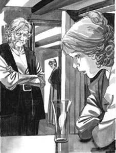
'Look down into the water. Look for a face.'
Gertrude stared down into the water.
'Do you see a face?' the Wise Man asked quietly.
Gertrude whispered something, but Rhoda could not hear. She turned away from the door.
When Mrs Lodge came out, her face was pale – paler than Rhoda's. Mr Trendle closed the door behind her, and the two women began to walk home. But things were not the same between them.
'Did he – did he ask for money?' Rhoda said quietly.
'Oh no, nothing. He did not want a penny,' said Gertrude.
'And what did you see?' asked Rhoda.
'Nothing... I – I don't want to speak about it.'
Gertrude did not look at Rhoda. Her pretty young face looked ten years older, and was now more like the face of the phantom in Rhoda's dream.
They did not speak for a long time, then Gertrude said suddenly, 'Did you want me to come here and see this Wise Man? How strange of you!'
'No, I didn't. But now, I am not sorry we came.'
For the first time since her dream Rhoda felt a little pleased. Life was cruel, she thought, and Gertrude Lodge must learn that lesson too.
On the long walk home they did not speak again about their visit to the Wise Man. But other people did, and whispered stories about it in all the farms and dairies. Mrs Lodge could no longer use her withered arm to do anything, and people began to put the word 'witch' in front of the name 'Rhoda Brook'.
Rhoda said nothing to anybody about the phantom of her dream, but her face got thinner and paler. And in the spring she and her boy left their house and went away into the hills in the west.
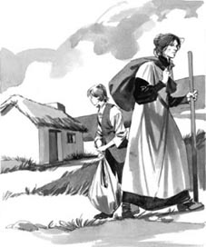
They went away into the hills in the west.
worse adj. more unpleasant or severe 更坏的；更差的
badly adv. to a serious degree 严重地
flesh n. the soft part of your body between the skin and the bones 肉
tear n. a drop of salty water that comes from the eyes when you cry 眼泪
worried adj. afraid that something bad is going to happen 焦虑的
famous adj. well-known 出名的，有名的
wise adj. knowing and understanding many things 有智慧的，博学的
believe v. to think that something is true or real 相信
mile n. a unit for measuring distance, equal to 1760 yards or about 1609 metres 英里
unfriendly adj. not kind or pleasant 不友好的；令人不快的
break v. to make something separate into two or more pieces 打破，打碎
pleased adj. experiencing pleasure or joy 喜悦的，高兴的
3
玻璃杯中的面孔
日子一天天过去，罗达·布鲁克害怕再次见到洛奇夫人。她喜欢洛奇夫人，不想回忆那个奇怪的梦，还有年轻夫人胳膊上奇怪的印迹。可是她没办法不去想。
有一天，她们在从村子过来的路上相遇了。两人交谈了一两分钟后，罗达问：“洛奇夫人，您的胳膊怎么样了？好些了吗？”
“没有。比以前更严重了。有时候疼得厉害。”
“大夫怎么说呢？”罗达问。
“大夫也说不清楚，只是说：'把胳膊放进热水里泡，每天两次，每次五分钟。'唉，我照做了，可是没什么用。”
“我能看看您的胳膊吗？”罗达问。
年轻的夫人再次挽起衣袖，露出胳膊，罗达仔细地看了看。
胳膊变细了，有些萎缩。那些印迹越来越像手指抓过的痕迹。罗达记得她的梦，记得手中抓着那只胳膊的感觉——就在同一个位置。
“看起来像手指印。”格特鲁德·洛奇说。她努力想笑一笑。“我丈夫说这是女巫留下的印迹。他说有个女巫用手碰过我的胳膊，所以上面的肉慢慢萎缩了。”
“不，不。”罗达急忙说。她感到又冷又怕。“不要听信那些老掉牙的传说。”
年轻夫人满脸愁苦：“我没有，可是……你知道吗，我想他开始……开始不那么爱我了，因为胳膊上的这些印迹。男人们都希望他们的妻子漂漂亮亮的，不是吗？”
“有些男人的确是这样。”罗达说，“不过别给他看您的胳膊呀。一直把胳膊盖着，他就看不到了。”
“嗯，但他知道那些印迹还在。”格特鲁德把目光移开，可罗达看得到她眼中的泪。
“希望您的胳膊早点儿好起来，洛奇夫人。”罗达低声说。
她跟洛奇夫人道了别，开始往家走。她为既可怜又无辜的年轻夫人感到难过，不想伤害她。但她一点儿也不为那位丈夫难过。她一边往家里走，一边想着这个男人。“好啊，洛奇场主，”罗达想，“你曾经爱过我，却离开了我，而且没给我一点儿帮助。你想娶一个更年轻、更漂亮的新妻子。可她现在也不那么漂亮了，不是吗？”
第二天，罗达干完晚上挤奶的活儿后，从奶牛场往家走。快要到家的时候，她看见格特鲁德·洛奇跟在她后面。罗达走下山来，迎上了她。
“啊，罗达！”格特鲁德叫着，“我要见你——我想问你……”她苍白的脸上满是焦虑，右手托着她的左胳膊。“有人告诉我，”她说，“在埃格登荒原有个人，大家不知道他的名字，但都说他是位有名的'大师'，说他能帮人们解决……这种事。”
她低头看了看自己的左胳膊，又看了看罗达，目光中透着期待。“他们说你知道这个人，这位大师。你知道他的名字吗？”
“他们说的可能是特伦德尔先生。”罗达缓缓地说。她感到有些不舒服。这位特伦德尔先生，人们说他可以做到很多稀奇的事情。他能解梦，能将幻影从房子中驱逐出去，还能破解巫术……“我不是女巫！”她想，“我不是！我根本不信这些东西。”
格特鲁德望着她。“你认识他，”她说，“我从你的表情能看出来。其实，我也不相信什么'大师'。他们能做什么呢？可是……唉，我只能去找找他了。去他家的路远吗？”
“很远——大概五英里。”罗达说。
“唉，我只能走着过去。我不能跟我丈夫说这件事。罗达，你能跟我一起去，帮我带路吗？明天下午行不行？”
“哦，不……这……我……”罗达吞吞吐吐道。
“求你了！”格特鲁德说。
最终，罗达还是没能推辞。洛奇夫人为人善良，心肠又好，她需要朋友的帮助。可是，或许大师真的能够看透梦境。罗达不想去见这位特伦德尔先生，她害怕……
第二天下午，罗达和格特鲁德在房子边的树旁会合，然后开始了长途跋涉，穿过群山，往埃格登荒原走去。那天天很冷，山顶上方的天空阴沉沉的，透着不祥的感觉。
在村子外面，两人找到了特伦德尔先生的房子。她们到的时候，他正巧在家。这是一位头发花白的老人。见到罗达，他死死地盯着她看了好长时间。洛奇夫人跟他讲起自己胳膊的事，他便仔细查看起那只胳膊来。
“没错，大夫拿这个没辙。”他说，“这是你的敌人搞出来的。”
罗达往后缩了缩。
“敌人？什么敌人？”洛奇夫人问。
“我不知道，”大师看着她说，“但你自己可能知道。我可以让你看到那个人。你想让我这么做吗？”
“嗯，”格特鲁德说，“我想，请让我看到吧！”
特伦德尔先生将格特鲁德带到另一间屋子，不过没把门关上，罗达可以看到屋子里面的情形。
大师拿出一只鸡蛋，施了些法术。然后，他在桌子上放了杯水，小心地把鸡蛋磕破。蛋清流进水中，变成了奶白色，缓缓地打着转。
他把玻璃杯放到格特鲁德面前。“低头看水里面，”他说，“找一张脸。”
格特鲁德低头向水里凝视。
“你见到一张脸了吗？”大师轻声问。
格特鲁德低声回答了什么，但是罗达听不到。她从门旁边走开了。
洛奇夫人从里面出来时，面色苍白——比罗达的脸色还要差。特伦德尔先生在她身后关上了门。两个女人开始往回走，可两人之间的关系已经跟来时不一样了。
“他——他跟您要钱了吗？”罗达小声地问。
“哦，没，没要。他一分钱都不要。”格特鲁德说。
“那您看见了什么？”罗达问。
“没什么……我——我不想说这个。”
格特鲁德没有看罗达。她年轻漂亮的脸仿佛一下子老了十岁，现在看起来更像罗达梦中的那个幻影了。
她们沉默了许久。之后，格特鲁德突然说：“你是故意想让我来这儿见这位大师的吗？你这么做太不可思议了！”
“不，我没想让您来。可是现在我也不后悔我们来了。”
自从上次的梦以后，罗达第一次感到有点儿高兴。她想，生活是残酷的，格特鲁德·洛奇必须学到这个教训。
在余下来长长的路程当中，两个人再没有提起造访大师的事。可是其他人却相反，所有农场和奶牛场的人们都在悄悄谈论着这件事。洛奇夫人已经不能用她萎缩的胳膊做任何事了，而罗达·布鲁克的名字前面也被人们加上了“女巫”两个字。
罗达没跟任何人提起过她梦中的幻影，可她的脸却愈发瘦削，愈发苍白。春天的时候，她和儿子搬离了原来的家，到西面的山里去了。
玻璃杯中的面孔
3
The face in the glass
The days went past, and Rhoda Brook was afraid to meet Mrs Lodge again. She liked her, and did not want to remember the strange dream or the strange marks on the young wife's arm. But she could not stop thinking about them.
One day they met on the road from the village. They began to talk, and after a minute or two Rhoda said, 'How is your arm, Mrs Lodge? Is it better now?'
'No, it isn't. It's worse than before. Sometimes it hurts very badly.'
'What does the doctor say about it?' asked Rhoda.
'He doesn't understand it. He just says, "Put the arm in hot water for five minutes twice a day." Well, I do that, but it doesn't help.'
'Can I look at your arm?' asked Rhoda.
Once again, the younger woman uncovered her arm, and Rhoda stared at it.
The arm was thinner, and a little withered. And the marks looked more and more like marks made by fingers. Rhoda remembered her dream, and the feel of the arm under her hand – in just the same place.
'It looks like the marks of fingers,' Gertrude Lodge said. She tried to laugh. 'My husband says they are a witch's marks. A witch put her hand on my arm, he says, and it's killing the flesh.'
'No, no,' said Rhoda quickly. She felt cold and afraid. 'Don't listen to those old stories.'
The young wife's face was unhappy. 'No, but... you see, I think he begins to... to love me less, because of these marks on my arm. Men always like their wives to be pretty, don't they?'
'Some men do,' said Rhoda. 'But don't show him the arm. Cover it all the time, and then he can't see it.'
'Ah, but he knows the marks are there.' Gertrude looked away, but Rhoda could see the tears in her eyes.
'I hope your arm is better soon, Mrs Lodge,' she said quietly.
She said goodbye and began to walk home. She felt sorry for the poor, innocent young wife, and did not want to hurt her. But she did not feel sorry for the husband. She walked home, thinking about him. 'So, Farmer Lodge,' she thought.'You loved me once, but then you left me, and did nothing to help me. You wanted a new, younger and prettier woman for your wife. But she is not so pretty now, is she?'
The next day Rhoda walked home from the dairy after evening milking at the usual time. She was nearly at her house when she saw Gertrude Lodge behind her. Rhoda went down the hill to meet her.
'Oh, Rhoda!' called Gertrude. 'I wanted to see you – to ask you...' Her face was pale and worried, and she held her left arm with her other hand. 'Somebody told me,' she said, 'about a man at Egdon Heath. They don't know his name, but they say he is a famous Wise Man, and can help people with... with things like this.'
Rhoda could see the tears in her eyes.
She looked down at her left arm, and then looked at Rhoda, with hope in her eyes. 'They say you know about him, this Wise Man. Do you know his name?'
'Perhaps they mean Mr Trendle,' Rhoda said slowly. She felt ill. This man Trendle, people said, could do many strange things. He could understand dreams, he could drive phantoms out of houses, he could stop the work of witches... 'I am not a witch,' she thought. 'I am not! I do not believe in these things.'
Gertrude watched her. 'You know him,' she said. 'I can see it in your face. Of course, I don't believe in Wise Men. What can they do? But... well, I can just go and see him. Is it far to his house?'
'Yes – about five miles,' said Rhoda.
'Well, I must walk there. I cannot tell my husband about this. Can you come with me, Rhoda, to show me the way? Perhaps tomorrow afternoon?'
'Oh no, it's... I...' Rhoda began.
'Please!' said Gertrude.
And in the end Rhoda could not say no. Mrs Lodge was good and kind, and she needed a friend's help. But perhaps a Wise Man could see into people's dreams. Rhoda did not want to meet this man Trendle, and she was afraid...
The next afternoon she met Gertrude by the trees near her house, and they began the long walk across the hills to Egdon Heath. It was a cold day, and the sky above the hills was dark and unfriendly.
They found Mr Trendle's house outside the village. He was at home when they arrived. He was an old man with grey hair, and he looked long and hard at Rhoda when he saw her. Mrs Lodge told him about her arm, and he looked at it carefully.
'No, doctors can't do anything for this,' he said. 'This is the work of an enemy.'
Rhoda moved away a little.
'An enemy? What enemy?' asked Mrs Lodge.
'I don't know,' said the Wise Man, looking at her. 'But perhaps you do. I can show the person to you. Do you want me to do that?'
'Yes,' said Gertrude. 'Yes, please show me.'
Mr Trendle took Gertrude into another room, but the door was open, and Rhoda could see into the room.
The Wise Man took an egg, and did something to it. Then he put a glass of water on the table, and carefully broke the egg open. The white of the egg went down into the water, changing to a milky white colour, and moving slowly round and round.
He put the glass in front of Gertrude. 'Look down into the water,' he said. 'Look for a face.'
'Look down into the water. Look for a face.'
Gertrude stared down into the water.
'Do you see a face?' the Wise Man asked quietly.
Gertrude whispered something, but Rhoda could not hear. She turned away from the door.
When Mrs Lodge came out, her face was pale – paler than Rhoda's. Mr Trendle closed the door behind her, and the two women began to walk home. But things were not the same between them.
'Did he – did he ask for money?' Rhoda said quietly.
'Oh no, nothing. He did not want a penny,' said Gertrude.
'And what did you see?' asked Rhoda.
'Nothing... I – I don't want to speak about it.'
Gertrude did not look at Rhoda. Her pretty young face looked ten years older, and was now more like the face of the phantom in Rhoda's dream.
They did not speak for a long time, then Gertrude said suddenly, 'Did you want me to come here and see this Wise Man? How strange of you!'
'No, I didn't. But now, I am not sorry we came.'
For the first time since her dream Rhoda felt a little pleased. Life was cruel, she thought, and Gertrude Lodge must learn that lesson too.
On the long walk home they did not speak again about their visit to the Wise Man. But other people did, and whispered stories about it in all the farms and dairies. Mrs Lodge could no longer use her withered arm to do anything, and people began to put the word 'witch' in front of the name 'Rhoda Brook'.
Rhoda said nothing to anybody about the phantom of her dream, but her face got thinner and paler. And in the spring she and her boy left their house and went away into the hills in the west.
They went away into the hills in the west.
worse adj. more unpleasant or severe 更坏的；更差的
badly adv. to a serious degree 严重地
flesh n. the soft part of your body between the skin and the bones 肉
tear n. a drop of salty water that comes from the eyes when you cry 眼泪
worried adj. afraid that something bad is going to happen 焦虑的
famous adj. well-known 出名的，有名的
wise adj. knowing and understanding many things 有智慧的，博学的
believe v. to think that something is true or real 相信
mile n. a unit for measuring distance, equal to 1760 yards or about 1609 metres 英里
unfriendly adj. not kind or pleasant 不友好的；令人不快的
break v. to make something separate into two or more pieces 打破，打碎
pleased adj. experiencing pleasure or joy 喜悦的，高兴的
3
玻璃杯中的面孔
日子一天天过去，罗达·布鲁克害怕再次见到洛奇夫人。她喜欢洛奇夫人，不想回忆那个奇怪的梦，还有年轻夫人胳膊上奇怪的印迹。可是她没办法不去想。
有一天，她们在从村子过来的路上相遇了。两人交谈了一两分钟后，罗达问：“洛奇夫人，您的胳膊怎么样了？好些了吗？”
“没有。比以前更严重了。有时候疼得厉害。”
“大夫怎么说呢？”罗达问。
“大夫也说不清楚，只是说：'把胳膊放进热水里泡，每天两次，每次五分钟。'唉，我照做了，可是没什么用。”
“我能看看您的胳膊吗？”罗达问。
年轻的夫人再次挽起衣袖，露出胳膊，罗达仔细地看了看。
胳膊变细了，有些萎缩。那些印迹越来越像手指抓过的痕迹。罗达记得她的梦，记得手中抓着那只胳膊的感觉——就在同一个位置。
“看起来像手指印。”格特鲁德·洛奇说。她努力想笑一笑。“我丈夫说这是女巫留下的印迹。他说有个女巫用手碰过我的胳膊，所以上面的肉慢慢萎缩了。”
“不，不。”罗达急忙说。她感到又冷又怕。“不要听信那些老掉牙的传说。”
年轻夫人满脸愁苦：“我没有，可是……你知道吗，我想他开始……开始不那么爱我了，因为胳膊上的这些印迹。男人们都希望他们的妻子漂漂亮亮的，不是吗？”
“有些男人的确是这样。”罗达说，“不过别给他看您的胳膊呀。一直把胳膊盖着，他就看不到了。”
“嗯，但他知道那些印迹还在。”格特鲁德把目光移开，可罗达看得到她眼中的泪。
“希望您的胳膊早点儿好起来，洛奇夫人。”罗达低声说。
她跟洛奇夫人道了别，开始往家走。她为既可怜又无辜的年轻夫人感到难过，不想伤害她。但她一点儿也不为那位丈夫难过。她一边往家里走，一边想着这个男人。“好啊，洛奇场主，”罗达想，“你曾经爱过我，却离开了我，而且没给我一点儿帮助。你想娶一个更年轻、更漂亮的新妻子。可她现在也不那么漂亮了，不是吗？”
第二天，罗达干完晚上挤奶的活儿后，从奶牛场往家走。快要到家的时候，她看见格特鲁德·洛奇跟在她后面。罗达走下山来，迎上了她。
“啊，罗达！”格特鲁德叫着，“我要见你——我想问你……”她苍白的脸上满是焦虑，右手托着她的左胳膊。“有人告诉我，”她说，“在埃格登荒原有个人，大家不知道他的名字，但都说他是位有名的'大师'，说他能帮人们解决……这种事。”
她低头看了看自己的左胳膊，又看了看罗达，目光中透着期待。“他们说你知道这个人，这位大师。你知道他的名字吗？”
“他们说的可能是特伦德尔先生。”罗达缓缓地说。她感到有些不舒服。这位特伦德尔先生，人们说他可以做到很多稀奇的事情。他能解梦，能将幻影从房子中驱逐出去，还能破解巫术……“我不是女巫！”她想，“我不是！我根本不信这些东西。”
格特鲁德望着她。“你认识他，”她说，“我从你的表情能看出来。其实，我也不相信什么'大师'。他们能做什么呢？可是……唉，我只能去找找他了。去他家的路远吗？”
“很远——大概五英里。”罗达说。
“唉，我只能走着过去。我不能跟我丈夫说这件事。罗达，你能跟我一起去，帮我带路吗？明天下午行不行？”
“哦，不……这……我……”罗达吞吞吐吐道。
“求你了！”格特鲁德说。
最终，罗达还是没能推辞。洛奇夫人为人善良，心肠又好，她需要朋友的帮助。可是，或许大师真的能够看透梦境。罗达不想去见这位特伦德尔先生，她害怕……
第二天下午，罗达和格特鲁德在房子边的树旁会合，然后开始了长途跋涉，穿过群山，往埃格登荒原走去。那天天很冷，山顶上方的天空阴沉沉的，透着不祥的感觉。
在村子外面，两人找到了特伦德尔先生的房子。她们到的时候，他正巧在家。这是一位头发花白的老人。见到罗达，他死死地盯着她看了好长时间。洛奇夫人跟他讲起自己胳膊的事，他便仔细查看起那只胳膊来。
“没错，大夫拿这个没辙。”他说，“这是你的敌人搞出来的。”
罗达往后缩了缩。
“敌人？什么敌人？”洛奇夫人问。
“我不知道，”大师看着她说，“但你自己可能知道。我可以让你看到那个人。你想让我这么做吗？”
“嗯，”格特鲁德说，“我想，请让我看到吧！”
特伦德尔先生将格特鲁德带到另一间屋子，不过没把门关上，罗达可以看到屋子里面的情形。
大师拿出一只鸡蛋，施了些法术。然后，他在桌子上放了杯水，小心地把鸡蛋磕破。蛋清流进水中，变成了奶白色，缓缓地打着转。
他把玻璃杯放到格特鲁德面前。“低头看水里面，”他说，“找一张脸。”
格特鲁德低头向水里凝视。
“你见到一张脸了吗？”大师轻声问。
格特鲁德低声回答了什么，但是罗达听不到。她从门旁边走开了。
洛奇夫人从里面出来时，面色苍白——比罗达的脸色还要差。特伦德尔先生在她身后关上了门。两个女人开始往回走，可两人之间的关系已经跟来时不一样了。
“他——他跟您要钱了吗？”罗达小声地问。
“哦，没，没要。他一分钱都不要。”格特鲁德说。
“那您看见了什么？”罗达问。
“没什么……我——我不想说这个。”
格特鲁德没有看罗达。她年轻漂亮的脸仿佛一下子老了十岁，现在看起来更像罗达梦中的那个幻影了。
她们沉默了许久。之后，格特鲁德突然说：“你是故意想让我来这儿见这位大师的吗？你这么做太不可思议了！”
“不，我没想让您来。可是现在我也不后悔我们来了。”
自从上次的梦以后，罗达第一次感到有点儿高兴。她想，生活是残酷的，格特鲁德·洛奇必须学到这个教训。
在余下来长长的路程当中，两个人再没有提起造访大师的事。可是其他人却相反，所有农场和奶牛场的人们都在悄悄谈论着这件事。洛奇夫人已经不能用她萎缩的胳膊做任何事了，而罗达·布鲁克的名字前面也被人们加上了“女巫”两个字。
罗达没跟任何人提起过她梦中的幻影，可她的脸却愈发瘦削，愈发苍白。春天的时候，她和儿子搬离了原来的家，到西面的山里去了。
4．The cure for a curse
4
The cure for a curse
Six years went past, and Mr and Mrs Lodge's married life was not happy. The farmer said little, and did not often smile. His wife had a withered arm, and there were no children to call him 'father', and to run laughing around the farmhouse. He thought of Rhoda Brook and her son. His son. But that was the past, and he could not change it now.
Gertrude Lodge was a different woman too. She was only twenty-five, but she looked older. Once a happy, smiling woman, she was now sad and worried all the time. She loved her husband, but he no longer loved her, and she knew it.'Six years of married life, and only a few months of love,' she sometimes whispered.
Her left arm was no better. She tried one thing after another, but nothing helped it. Some of the things were a little strange, and her husband did not like them.
'You think too much about your arm,' he said. 'You need somebody to talk to – somebody to be around the house. At one time there was a boy... I wanted him to come and live with us, but he is too old now. And he went away. I don't know where.'
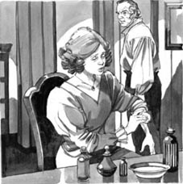
'You think too much about your arm,' Farmer Lodge said.
Gertrude knew about this boy now, and all of Rhoda Brook's story, but she and her husband never spoke about it. And she never said anything to him about her visit to the Wise Man of Egdon Heath, or about the face in the glass.
She wanted so much to find a cure for her arm. 'My husband cannot love me because of this arm,' she thought. 'So I must find a cure for it, I must. The Wise Man helped me before. Perhaps he can help me again.'
So one day she walked to Egdon Heath. She did not know the way, but at last she found the house.
'You can send away other things, I know,' she said to Trendle. 'Hair on women's faces, and things like that. Why can't you send this away?' She uncovered her poor, withered arm.
'No, I'm sorry, but I can't help you,' said Trendle. 'Your arm is withered because of a curse. It's not easy to find a cure for that.'
'Is there no cure, anywhere?' asked Gertrude sadly.
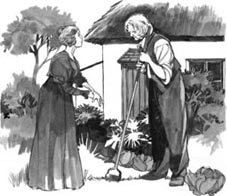
'Is there no cure, anywhere?' asked Gertrude sadly.
'There is one thing...' Trendle began slowly. 'But it's not easy for a woman to do.'
'Oh, tell me!' said Gertrude. 'Please!'
'You must put the withered arm on the neck of a hanged man. You must do it before he's cold – just after they take his body down.'
Gertrude's face was pale. 'How can that do good?'
'It can turn the blood, and that changes many things in the body. You must go to the jail when they hang someone, and wait for the body when they bring it in. In the old days lots of people did it; these days, not so many do it. But it is still the best cure for a curse.'

Back at home Gertrude thought about this for a long time. She tried to forget it, but she couldn't. She wanted to be pretty again, she wanted her husband to love her again. Yes, she must try this cure, she must.
'But how do I do it?' she thought. 'Where is the nearest jail? How can I get there? How often do they hang people? And when there is a hanging, how can I learn about it before it happens?'
So many questions. There was no one to help her, but slowly she began to find the answers. She asked careful questions in the village, because country people always know everything.
One old man was very helpful. 'The nearest jail is at Casterbridge, fifteen miles away,' he told Gertrude. 'They have trials there every three months, and there's usually a hanging after the trials. Some poor man or boy takes a cow or a sheep, or just some bread, and they hang him for it. Lots of people go to watch the hangings. I don't know why.'
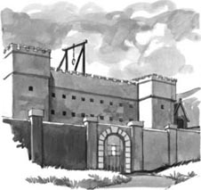
'There's usually a hanging after the trials.'
The next trials were in July, Gertrude learnt. She asked her husband about them, but Lodge said very little. He was colder to her than usual, and she did not ask him again. He was often away these days, so she did not see much of him.
July came, and Gertrude went to see the helpful old man in the village again. 'Just one hanging this time,' he told her. 'It's for arson, I think. They're going to hang him next Saturday.'
Gertrude walked slowly home. 'I cannot tell my husband about this... this cure,' she thought. 'And how can I be away from home for two nights? What can I say to him?'
But in the end it was easy. On the Thursday before the hanging, Lodge came to her. 'I'm going away for three nights,' he said. 'It's about farm work, so you can't come with me.'
'That's all right,' Gertrude said quietly. 'I'm happy to stay at home.'
They said nothing more, and on Thursday Lodge drove away in the carriage.
cure n. something to make an illness go away 疗法；药物
curse n. asking for something bad to happen to someone 诅咒；咒语
sad adj. not happy 悲哀的，悲伤的
never adv. not ever 从不，从未
hang v. to kill somebody by holding them above the ground by a rope around the neck 绞死
blood n. the red liquid inside the body 血，血液
jail n. a prison 监狱
trial n. a legal process in which a judge and often a jury in a court of law examine information to decide whether someone is guilty of a crime 审判
arson n. the crime of setting fire to a building 纵火（罪）
4
解咒的灵方
六年过去了，洛奇先生和夫人的婚姻生活并不幸福。农场主几乎不怎么说话，也很少笑。他的妻子有一条胳膊萎缩了，他们也没有孩子，没有人在农舍里欢笑奔跑、叫他“爸爸”。他想到罗达·布鲁克和她的儿子。他的儿子。但一切都已成为过去，他现在无力改变了。
格特鲁德·洛奇也完全变了样。她才25岁，看起来却老得多。她曾经是个快乐、爱笑的女人，现在却变得整天郁郁寡欢，忧心忡忡。她爱她的丈夫，可丈夫却不再爱她，她清楚这一点。“六年的婚姻，只有几个月的爱。”她有时这样轻声自语。
她的左胳膊毫无起色。她试了一个又一个办法，却没有一个管用。有些办法有点儿怪异，她丈夫很不喜欢。
“你想你的胳膊想得太多了。”他说，“你需要跟人聊聊天——家里应该多个人。曾经有个男孩儿……我曾经想让他过来跟我们生活在一起，可现在他年纪已经太大了。他走了。我都不知道他在哪儿。”
格特鲁德此时已经知道这个男孩儿以及所有关于罗达的事，但她从来没跟丈夫提起过。她也从来没跟他说过去埃格登荒原拜访大师的事，更没说过在杯子中看到的面孔。
她非常想找到一个能治愈她胳膊的法子。“我丈夫是因为这只胳膊才不爱我的。”她想，“所以我必须找到治疗的方法，必须。大师曾经帮过我，或许他还能再帮我一次。”
于是有一天，她又步行去了埃格登荒原。她不认得路，但最终还是找到了那座房子。
“我知道您可以赶走很多东西，”她对特伦德尔说，“比如女人脸上的毛发什么的。为什么您不能把这个东西也赶走呢？”她露出她那可怜的、萎缩的胳膊。
“不能，对不起，我没办法帮你。”特伦德尔说，“你的胳膊是由于诅咒而萎缩的。要找到一个破解的方法很不容易。”
“真的没有办法？哪儿都没有？”格特鲁德伤心地问。
“办法倒是有一个……”特伦德尔欲言又止，“可是对于一个女人来说太难做到了。”
“啊，快告诉我！”格特鲁德说，“求您了！”
“你得把萎缩的胳膊放到一个被绞死的男人的脖子上。必须赶在他的尸体变冷之前——就在尸体刚被抬下来时。”
格特鲁德脸色煞白：“这样做能有什么用呢？”
“这样能流转血脉，也就能改变身体里的许多东西。你必须在监狱要执行绞刑的时候到那儿去，等着他们把尸体抬回来。过去好多人用过这个法子，现在没那么多人用了。但这仍然是解除诅咒的最好办法。”
回到家以后，格特鲁德为这件事想了很久。她想忘掉，可怎么都忘不掉。她想变回漂亮的样子，想让丈夫重新爱上自己。是的，她必须试试这个办法，必须。
“可是我该怎么做？”她想，“最近的监狱在哪里？我怎么才能到那儿？他们多长时间执行一次绞刑？他们执行绞刑的时候，我怎么才能提前知道？”
问题太多了。没有人帮她，不过慢慢地，她还是找到了答案。她小心地向村子里的人们询问，因为乡下人总是什么都知道。
一个老人帮了她很大的忙。“离这儿最近的监狱在卡斯特桥，有十五英里远。”他告诉格特鲁德，“每三个月那里会进行一次审判，每次审判之后一般会有一次绞刑。哪个穷人或穷孩子偷了一头牛或一只羊，甚至只是些面包，就会被绞死。很多人会去观看绞刑，我也不明白为什么。”
格特鲁德得知下一次审判是在七月份。她向自己的丈夫询问审判的事，但洛奇说得很少。他对她比以往更加冷漠，她也就不再问他了。最近这段时间他总是出去，所以她也很少见到他。
七月到了，格特鲁德又去村子里见那位帮她忙的老人。“这次只绞死一个人。”他告诉她，“好像是因为纵火。他们要在下周六把他绞死。”
格特鲁德慢慢地走回了家。“我不能告诉丈夫这件事……这个解咒的办法。”她想，“而且我怎么才能离开两个晚上呢？该怎么跟他说呢？”
可到了最后，问题反倒很容易便解决了。绞刑前的那个周四，洛奇来到她跟前。“我要出去三个晚上，”他说，“是农活儿的事，所以你不能跟我一起去。”
“好的。”格特鲁德轻声说，“我乐意待在家里。”
他们没再说别的。周四那天，洛奇驾着马车离开了。
解咒的灵方
4
The cure for a curse
Six years went past, and Mr and Mrs Lodge's married life was not happy. The farmer said little, and did not often smile. His wife had a withered arm, and there were no children to call him 'father', and to run laughing around the farmhouse. He thought of Rhoda Brook and her son. His son. But that was the past, and he could not change it now.
Gertrude Lodge was a different woman too. She was only twenty-five, but she looked older. Once a happy, smiling woman, she was now sad and worried all the time. She loved her husband, but he no longer loved her, and she knew it.'Six years of married life, and only a few months of love,' she sometimes whispered.
Her left arm was no better. She tried one thing after another, but nothing helped it. Some of the things were a little strange, and her husband did not like them.
'You think too much about your arm,' he said. 'You need somebody to talk to – somebody to be around the house. At one time there was a boy... I wanted him to come and live with us, but he is too old now. And he went away. I don't know where.'
'You think too much about your arm,' Farmer Lodge said.
Gertrude knew about this boy now, and all of Rhoda Brook's story, but she and her husband never spoke about it. And she never said anything to him about her visit to the Wise Man of Egdon Heath, or about the face in the glass.
She wanted so much to find a cure for her arm. 'My husband cannot love me because of this arm,' she thought. 'So I must find a cure for it, I must. The Wise Man helped me before. Perhaps he can help me again.'
So one day she walked to Egdon Heath. She did not know the way, but at last she found the house.
'You can send away other things, I know,' she said to Trendle. 'Hair on women's faces, and things like that. Why can't you send this away?' She uncovered her poor, withered arm.
'No, I'm sorry, but I can't help you,' said Trendle. 'Your arm is withered because of a curse. It's not easy to find a cure for that.'
'Is there no cure, anywhere?' asked Gertrude sadly.
'Is there no cure, anywhere?' asked Gertrude sadly.
'There is one thing...' Trendle began slowly. 'But it's not easy for a woman to do.'
'Oh, tell me!' said Gertrude. 'Please!'
'You must put the withered arm on the neck of a hanged man. You must do it before he's cold – just after they take his body down.'
Gertrude's face was pale. 'How can that do good?'
'It can turn the blood, and that changes many things in the body. You must go to the jail when they hang someone, and wait for the body when they bring it in. In the old days lots of people did it; these days, not so many do it. But it is still the best cure for a curse.'
Back at home Gertrude thought about this for a long time. She tried to forget it, but she couldn't. She wanted to be pretty again, she wanted her husband to love her again. Yes, she must try this cure, she must.
'But how do I do it?' she thought. 'Where is the nearest jail? How can I get there? How often do they hang people? And when there is a hanging, how can I learn about it before it happens?'
So many questions. There was no one to help her, but slowly she began to find the answers. She asked careful questions in the village, because country people always know everything.
One old man was very helpful. 'The nearest jail is at Casterbridge, fifteen miles away,' he told Gertrude. 'They have trials there every three months, and there's usually a hanging after the trials. Some poor man or boy takes a cow or a sheep, or just some bread, and they hang him for it. Lots of people go to watch the hangings. I don't know why.'
'There's usually a hanging after the trials.'
The next trials were in July, Gertrude learnt. She asked her husband about them, but Lodge said very little. He was colder to her than usual, and she did not ask him again. He was often away these days, so she did not see much of him.
July came, and Gertrude went to see the helpful old man in the village again. 'Just one hanging this time,' he told her. 'It's for arson, I think. They're going to hang him next Saturday.'
Gertrude walked slowly home. 'I cannot tell my husband about this... this cure,' she thought. 'And how can I be away from home for two nights? What can I say to him?'
But in the end it was easy. On the Thursday before the hanging, Lodge came to her. 'I'm going away for three nights,' he said. 'It's about farm work, so you can't come with me.'
'That's all right,' Gertrude said quietly. 'I'm happy to stay at home.'
They said nothing more, and on Thursday Lodge drove away in the carriage.
cure n. something to make an illness go away 疗法；药物
curse n. asking for something bad to happen to someone 诅咒；咒语
sad adj. not happy 悲哀的，悲伤的
never adv. not ever 从不，从未
hang v. to kill somebody by holding them above the ground by a rope around the neck 绞死
blood n. the red liquid inside the body 血，血液
jail n. a prison 监狱
trial n. a legal process in which a judge and often a jury in a court of law examine information to decide whether someone is guilty of a crime 审判
arson n. the crime of setting fire to a building 纵火（罪）
4
解咒的灵方
六年过去了，洛奇先生和夫人的婚姻生活并不幸福。农场主几乎不怎么说话，也很少笑。他的妻子有一条胳膊萎缩了，他们也没有孩子，没有人在农舍里欢笑奔跑、叫他“爸爸”。他想到罗达·布鲁克和她的儿子。他的儿子。但一切都已成为过去，他现在无力改变了。
格特鲁德·洛奇也完全变了样。她才25岁，看起来却老得多。她曾经是个快乐、爱笑的女人，现在却变得整天郁郁寡欢，忧心忡忡。她爱她的丈夫，可丈夫却不再爱她，她清楚这一点。“六年的婚姻，只有几个月的爱。”她有时这样轻声自语。
她的左胳膊毫无起色。她试了一个又一个办法，却没有一个管用。有些办法有点儿怪异，她丈夫很不喜欢。
“你想你的胳膊想得太多了。”他说，“你需要跟人聊聊天——家里应该多个人。曾经有个男孩儿……我曾经想让他过来跟我们生活在一起，可现在他年纪已经太大了。他走了。我都不知道他在哪儿。”
格特鲁德此时已经知道这个男孩儿以及所有关于罗达的事，但她从来没跟丈夫提起过。她也从来没跟他说过去埃格登荒原拜访大师的事，更没说过在杯子中看到的面孔。
她非常想找到一个能治愈她胳膊的法子。“我丈夫是因为这只胳膊才不爱我的。”她想，“所以我必须找到治疗的方法，必须。大师曾经帮过我，或许他还能再帮我一次。”
于是有一天，她又步行去了埃格登荒原。她不认得路，但最终还是找到了那座房子。
“我知道您可以赶走很多东西，”她对特伦德尔说，“比如女人脸上的毛发什么的。为什么您不能把这个东西也赶走呢？”她露出她那可怜的、萎缩的胳膊。
“不能，对不起，我没办法帮你。”特伦德尔说，“你的胳膊是由于诅咒而萎缩的。要找到一个破解的方法很不容易。”
“真的没有办法？哪儿都没有？”格特鲁德伤心地问。
“办法倒是有一个……”特伦德尔欲言又止，“可是对于一个女人来说太难做到了。”
“啊，快告诉我！”格特鲁德说，“求您了！”
“你得把萎缩的胳膊放到一个被绞死的男人的脖子上。必须赶在他的尸体变冷之前——就在尸体刚被抬下来时。”
格特鲁德脸色煞白：“这样做能有什么用呢？”
“这样能流转血脉，也就能改变身体里的许多东西。你必须在监狱要执行绞刑的时候到那儿去，等着他们把尸体抬回来。过去好多人用过这个法子，现在没那么多人用了。但这仍然是解除诅咒的最好办法。”
回到家以后，格特鲁德为这件事想了很久。她想忘掉，可怎么都忘不掉。她想变回漂亮的样子，想让丈夫重新爱上自己。是的，她必须试试这个办法，必须。
“可是我该怎么做？”她想，“最近的监狱在哪里？我怎么才能到那儿？他们多长时间执行一次绞刑？他们执行绞刑的时候，我怎么才能提前知道？”
问题太多了。没有人帮她，不过慢慢地，她还是找到了答案。她小心地向村子里的人们询问，因为乡下人总是什么都知道。
一个老人帮了她很大的忙。“离这儿最近的监狱在卡斯特桥，有十五英里远。”他告诉格特鲁德，“每三个月那里会进行一次审判，每次审判之后一般会有一次绞刑。哪个穷人或穷孩子偷了一头牛或一只羊，甚至只是些面包，就会被绞死。很多人会去观看绞刑，我也不明白为什么。”
格特鲁德得知下一次审判是在七月份。她向自己的丈夫询问审判的事，但洛奇说得很少。他对她比以往更加冷漠，她也就不再问他了。最近这段时间他总是出去，所以她也很少见到他。
七月到了，格特鲁德又去村子里见那位帮她忙的老人。“这次只绞死一个人。”他告诉她，“好像是因为纵火。他们要在下周六把他绞死。”
格特鲁德慢慢地走回了家。“我不能告诉丈夫这件事……这个解咒的办法。”她想，“而且我怎么才能离开两个晚上呢？该怎么跟他说呢？”
可到了最后，问题反倒很容易便解决了。绞刑前的那个周四，洛奇来到她跟前。“我要出去三个晚上，”他说，“是农活儿的事，所以你不能跟我一起去。”
“好的。”格特鲁德轻声说，“我乐意待在家里。”
他们没再说别的。周四那天，洛奇驾着马车离开了。
5．The hangman
5
The hangman
The next morning Gertrude got ready to leave for Caster bridge. She did not want to go by road because she did not want to meet any of her husband's friends. So she took one of the heavy horses from the farm, and rode west across the hills.
She was afraid of riding with a half-dead arm, but the farm horse was quiet and slow, and easy to ride. He carried her uphill and downhill, past rivers and through trees, moving west all the time.
The sun slowly went down in the sky, and it was nearly eight o'clock when Gertrude stopped for a moment at the top of a hill. It was the last hill before the town, and she could see the roofs of Casterbridge below. There was a big building on a hill at the end of the town, with a white roof. She knew this was the jail, and she could see a lot of workmen on the roof.
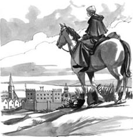
Gertrude could see the roofs of Casterbridge below.
'What are they doing?' she thought. 'They're building something up there on the roof... Oh!'
Suddenly, she understood, and quickly turned her eyes away. It was a warm summer evening, but she shivered with cold.
'Tomorrow they're going to hang a man on that roof,' she thought. 'And when he is dead...'
She shivered again, but then she remembered her husband's cold words and his unsmiling face, and she rode on down into the town.
She found a room to stay for the night, and then went out into the town.
'What do I do now?' she thought. 'How can I get into the jail tomorrow? Who must I talk to? The men at the jail, or the hangman?'
She was afraid to go to the jail, so she went to find the hangman. He had a house down by the river, a boy in the town told her.
When she found the house, she stood outside for some minutes, afraid to go to the door. Then the door opened and a man came out.
'Who are you?' he called out. 'What do you want?'
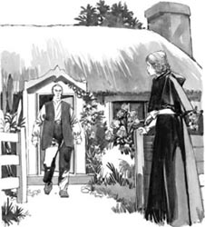
'Who are you?' the man called out. 'What do you want?'
'I want to speak to you for a minute.'
He came nearer, and looked at her. 'Well, well, that's a pretty face,' he said. 'Come into the house.'
They went inside. Davies (that was his name) was a hangman on some days, but a gardener on other days.
'Is it about gardening work?' he asked Gertrude. 'I can't do any tomorrow, because I'm working at the jail.'
'Yes, yes, I know. That's why I'm here.'
'Ah! I thought so. Is the poor man one of your family then? Perhaps your young brother? No,' – Davies looked at Gertrude's dress – 'I don't think so. Was he one of your farm workers perhaps?'
'No. What time is the hanging?'
'The same as usual – twelve o'clock.'
'And it is... it is going to happen, yes?'
'Oh yes, nothing can stop the hanging now,' said Davies.'But I'm sorry for this young man, I truly am. He's only eighteen. They say it was arson, but I don't know. He was there when the fire began, but there were twenty other men there too. So how do they know? I think they just want to hang someone... anyone. But what can I do for you, my pretty?'
'I need a cure,' Gertrude said, 'a cure for a curse. And a Wise Man told me about the hanged man, and – and turning the blood...'
'Oh yes, miss! Now I understand. People sometimes come for that. But not pretty young things like you. Well, well. What's the cure for?'
'It's this.' Gertrude uncovered her left arm.
'Ah! It's all withered,' said the hangman, looking at it.
'Yes,' she said.
'Well, a hanged man's neck is the best cure for that,' he said. 'Your Wise Man was right.'
'So can you help me?' Gertrude whispered.
'Usually people go to the jail, and take their doctor with them, and give their name and address... But yes, I can help you – for a little money, perhaps.'
'Oh, thank you!' Gertrude said. 'It's better like this. I don't want people to know about it.'
'Don't want your lover to know, eh?'
'No – husband.'
'Aha! Very well. You can touch the body.'
'Where is it now?' she said, shivering.
'It? – He, you mean; he's still alive tonight. He's in the jail, a little room right at the top.'
'And what must I do tomorrow?' Gertrude said.
'There's a little door at the back of the jail. Be there at one o'clock, no later. I can open the door from inside, and can take you to the body when they bring him in. Goodnight. Don't be late. And you don't want people to see you, so cover your face. Goodnight, my pretty!'
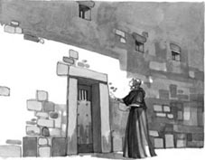
'There's a little door at the back of the jail.'
Gertrude went away, and walked up to the jail on the hill. She wanted to find the little door at the back, to know it for tomorrow. Then she went back down into the town and went to her room, and waited for the morning.
ride v. to sit on a horse's back when it moves 骑马
shiver v. to shake with cold, or fear 发抖，颤抖
gardener n. someone who takes care of a garden 园丁
as usual in the way that happens or exists most of the time 像往常一样，照例
alive adj. possessing life 活着
5
刽子手
第二天一早，格特鲁德准备出发前往卡斯特桥。她不想走大路，因为不想碰到任何她丈夫的朋友。于是她牵了农场上一匹健壮的马，翻山越岭朝西而去。
拖着一条几乎残废的胳膊骑马赶路，她有点儿担心，好在这匹马温顺，走得也慢，不难驾驭。马儿驮着她跋山涉水，穿过树林，一直朝西走。
太阳慢慢地从天空落了下去，快到八点的时候，格特鲁德在一座山的山顶稍作停歇。这是到达镇子前的最后一个山头，她能看到山下卡斯特桥镇上房子的屋顶了。在镇子尽头的山上，有一座很大的建筑，屋顶是白色的。她知道这就是监狱。她还看到屋顶上有好多工人。
“他们在做什么？”她想，“在屋顶上把什么东西竖起来……啊！”
她突然明白过来，于是立刻把目光转向了别处。这是个温暖的夏夜，她却冷得发抖。
“明天他们就要在屋顶上绞死一个人。”她想，“他死了以后……”
她又打了个寒战。但转念想起丈夫冷漠的话语和没有笑容的面孔，她又继续骑着马朝镇上走去。
她先是找了间过夜的屋子，然后出门去了镇上。
“我现在该做什么？”她想，“我明天怎么才能进到监狱里面？我要去找谁说？是监狱里的人，还是执行绞刑的刽子手？”
她不敢去监狱，只好去找刽子手。镇子里的一个男孩告诉她，刽子手在河的下游有座房子。
找到房子之后，她在外面站了几分钟，不敢去敲门。这时，门开了，一个男人走了出来。
“你是谁？”他喊道，“你想干什么？”
“我想跟您谈几句话。”
男人来到她跟前，看着她。“唔，不错，好漂亮的脸蛋儿。”他说，“进来吧！”
他们进到屋内。戴维斯（这是男人的名字）有些日子做刽子手，其他时候则是个园丁。
“是园艺活儿吗？”他问格特鲁德，“我明天做不了，因为得给监狱干活儿。”
“是，是，我知道。这正是我来这儿的原因。”
“啊！我猜就是这样。那个可怜的家伙是你的家人？大概是你弟弟吧？不对，”戴维斯看着格特鲁德的裙子——“应该不是你弟弟。他是你农场上的工人吧？”
“不是。绞刑什么时候执行？”
“跟平常一样——十二点钟。”
“那……那是会执行了，对吗？”
“哦，是的。现在没有什么能阻止这次行刑了。”戴维斯说，“不过我倒是替那个年轻人难过，真心难过。他才十八岁。他们说他是纵火犯，我看倒是不见得。火着起来的时候他是在那儿，可还有另外二十个人也在那儿啊。他们怎么知道是谁放的火呢？我猜他们就是为了要绞死个人……管他是谁。对了，我能为你做点儿什么呢，美人儿？”
“我需要一个秘方，”格特鲁德说，“一个解除咒语的秘方。一位大师告诉我要找个刚绞死的人，这样——这样就能流转血脉……”
“哦，对啊，小姐！现在我明白了。有时是有些人会为这事而来。不过还没有像你这么漂亮的。好吧，好吧。这个秘方是要治什么？”
“治这个。”格特鲁德露出左胳膊。
“啊！萎缩成这样了。”刽子手看着胳膊说。
“是啊。”她说。
“没错，绞刑犯的脖子是治这个的最好办法。”他说，“你的大师说得对。”
“那您能帮我吗？”格特鲁德小声问。
“病人通常要到监狱去，还要带着他们的大夫，报上名字和地址……不过没关系，我能帮你——只要你给点儿钱。”
“哦，谢谢您！”格特鲁德说，“这样更好。我不想让别人知道这件事。”
“不想让你的情人知道，是吗？”
“不——是丈夫。”
“啊哈！好吧。可以让你摸那具尸体。”
“它现在在哪儿？”她颤抖着问。
“它？——你说的是他吧。他今儿晚上还活着，就在监狱顶层的一个小监房里面。”
“我明天要怎么做？”格特鲁德问。
“监狱后面有扇小门。一点钟的时候等在那里，别来晚了。我从里面把门打开，等他们把尸体抬回来，我就把你带过去。晚安。别来晚了。不想让别人看见你，就把脸遮上吧。晚安，我的美人儿！”
格特鲁德离开之后，走到小山上的监狱跟前。她想找到监狱后面那扇小门，好知道明天怎么走。随后，她下山回到了镇子里自己的房间，等待着早晨的到来。
刽子手
5
The hangman
The next morning Gertrude got ready to leave for Caster bridge. She did not want to go by road because she did not want to meet any of her husband's friends. So she took one of the heavy horses from the farm, and rode west across the hills.
She was afraid of riding with a half-dead arm, but the farm horse was quiet and slow, and easy to ride. He carried her uphill and downhill, past rivers and through trees, moving west all the time.
The sun slowly went down in the sky, and it was nearly eight o'clock when Gertrude stopped for a moment at the top of a hill. It was the last hill before the town, and she could see the roofs of Casterbridge below. There was a big building on a hill at the end of the town, with a white roof. She knew this was the jail, and she could see a lot of workmen on the roof.
Gertrude could see the roofs of Casterbridge below.
'What are they doing?' she thought. 'They're building something up there on the roof... Oh!'
Suddenly, she understood, and quickly turned her eyes away. It was a warm summer evening, but she shivered with cold.
'Tomorrow they're going to hang a man on that roof,' she thought. 'And when he is dead...'
She shivered again, but then she remembered her husband's cold words and his unsmiling face, and she rode on down into the town.
She found a room to stay for the night, and then went out into the town.
'What do I do now?' she thought. 'How can I get into the jail tomorrow? Who must I talk to? The men at the jail, or the hangman?'
She was afraid to go to the jail, so she went to find the hangman. He had a house down by the river, a boy in the town told her.
When she found the house, she stood outside for some minutes, afraid to go to the door. Then the door opened and a man came out.
'Who are you?' he called out. 'What do you want?'
'Who are you?' the man called out. 'What do you want?'
'I want to speak to you for a minute.'
He came nearer, and looked at her. 'Well, well, that's a pretty face,' he said. 'Come into the house.'
They went inside. Davies (that was his name) was a hangman on some days, but a gardener on other days.
'Is it about gardening work?' he asked Gertrude. 'I can't do any tomorrow, because I'm working at the jail.'
'Yes, yes, I know. That's why I'm here.'
'Ah! I thought so. Is the poor man one of your family then? Perhaps your young brother? No,' – Davies looked at Gertrude's dress – 'I don't think so. Was he one of your farm workers perhaps?'
'No. What time is the hanging?'
'The same as usual – twelve o'clock.'
'And it is... it is going to happen, yes?'
'Oh yes, nothing can stop the hanging now,' said Davies.'But I'm sorry for this young man, I truly am. He's only eighteen. They say it was arson, but I don't know. He was there when the fire began, but there were twenty other men there too. So how do they know? I think they just want to hang someone... anyone. But what can I do for you, my pretty?'
'I need a cure,' Gertrude said, 'a cure for a curse. And a Wise Man told me about the hanged man, and – and turning the blood...'
'Oh yes, miss! Now I understand. People sometimes come for that. But not pretty young things like you. Well, well. What's the cure for?'
'It's this.' Gertrude uncovered her left arm.
'Ah! It's all withered,' said the hangman, looking at it.
'Yes,' she said.
'Well, a hanged man's neck is the best cure for that,' he said. 'Your Wise Man was right.'
'So can you help me?' Gertrude whispered.
'Usually people go to the jail, and take their doctor with them, and give their name and address... But yes, I can help you – for a little money, perhaps.'
'Oh, thank you!' Gertrude said. 'It's better like this. I don't want people to know about it.'
'Don't want your lover to know, eh?'
'No – husband.'
'Aha! Very well. You can touch the body.'
'Where is it now?' she said, shivering.
'It? – He, you mean; he's still alive tonight. He's in the jail, a little room right at the top.'
'And what must I do tomorrow?' Gertrude said.
'There's a little door at the back of the jail. Be there at one o'clock, no later. I can open the door from inside, and can take you to the body when they bring him in. Goodnight. Don't be late. And you don't want people to see you, so cover your face. Goodnight, my pretty!'
'There's a little door at the back of the jail.'
Gertrude went away, and walked up to the jail on the hill. She wanted to find the little door at the back, to know it for tomorrow. Then she went back down into the town and went to her room, and waited for the morning.
ride v. to sit on a horse's back when it moves 骑马
shiver v. to shake with cold, or fear 发抖，颤抖
gardener n. someone who takes care of a garden 园丁
as usual in the way that happens or exists most of the time 像往常一样，照例
alive adj. possessing life 活着
5
刽子手
第二天一早，格特鲁德准备出发前往卡斯特桥。她不想走大路，因为不想碰到任何她丈夫的朋友。于是她牵了农场上一匹健壮的马，翻山越岭朝西而去。
拖着一条几乎残废的胳膊骑马赶路，她有点儿担心，好在这匹马温顺，走得也慢，不难驾驭。马儿驮着她跋山涉水，穿过树林，一直朝西走。
太阳慢慢地从天空落了下去，快到八点的时候，格特鲁德在一座山的山顶稍作停歇。这是到达镇子前的最后一个山头，她能看到山下卡斯特桥镇上房子的屋顶了。在镇子尽头的山上，有一座很大的建筑，屋顶是白色的。她知道这就是监狱。她还看到屋顶上有好多工人。
“他们在做什么？”她想，“在屋顶上把什么东西竖起来……啊！”
她突然明白过来，于是立刻把目光转向了别处。这是个温暖的夏夜，她却冷得发抖。
“明天他们就要在屋顶上绞死一个人。”她想，“他死了以后……”
她又打了个寒战。但转念想起丈夫冷漠的话语和没有笑容的面孔，她又继续骑着马朝镇上走去。
她先是找了间过夜的屋子，然后出门去了镇上。
“我现在该做什么？”她想，“我明天怎么才能进到监狱里面？我要去找谁说？是监狱里的人，还是执行绞刑的刽子手？”
她不敢去监狱，只好去找刽子手。镇子里的一个男孩告诉她，刽子手在河的下游有座房子。
找到房子之后，她在外面站了几分钟，不敢去敲门。这时，门开了，一个男人走了出来。
“你是谁？”他喊道，“你想干什么？”
“我想跟您谈几句话。”
男人来到她跟前，看着她。“唔，不错，好漂亮的脸蛋儿。”他说，“进来吧！”
他们进到屋内。戴维斯（这是男人的名字）有些日子做刽子手，其他时候则是个园丁。
“是园艺活儿吗？”他问格特鲁德，“我明天做不了，因为得给监狱干活儿。”
“是，是，我知道。这正是我来这儿的原因。”
“啊！我猜就是这样。那个可怜的家伙是你的家人？大概是你弟弟吧？不对，”戴维斯看着格特鲁德的裙子——“应该不是你弟弟。他是你农场上的工人吧？”
“不是。绞刑什么时候执行？”
“跟平常一样——十二点钟。”
“那……那是会执行了，对吗？”
“哦，是的。现在没有什么能阻止这次行刑了。”戴维斯说，“不过我倒是替那个年轻人难过，真心难过。他才十八岁。他们说他是纵火犯，我看倒是不见得。火着起来的时候他是在那儿，可还有另外二十个人也在那儿啊。他们怎么知道是谁放的火呢？我猜他们就是为了要绞死个人……管他是谁。对了，我能为你做点儿什么呢，美人儿？”
“我需要一个秘方，”格特鲁德说，“一个解除咒语的秘方。一位大师告诉我要找个刚绞死的人，这样——这样就能流转血脉……”
“哦，对啊，小姐！现在我明白了。有时是有些人会为这事而来。不过还没有像你这么漂亮的。好吧，好吧。这个秘方是要治什么？”
“治这个。”格特鲁德露出左胳膊。
“啊！萎缩成这样了。”刽子手看着胳膊说。
“是啊。”她说。
“没错，绞刑犯的脖子是治这个的最好办法。”他说，“你的大师说得对。”
“那您能帮我吗？”格特鲁德小声问。
“病人通常要到监狱去，还要带着他们的大夫，报上名字和地址……不过没关系，我能帮你——只要你给点儿钱。”
“哦，谢谢您！”格特鲁德说，“这样更好。我不想让别人知道这件事。”
“不想让你的情人知道，是吗？”
“不——是丈夫。”
“啊哈！好吧。可以让你摸那具尸体。”
“它现在在哪儿？”她颤抖着问。
“它？——你说的是他吧。他今儿晚上还活着，就在监狱顶层的一个小监房里面。”
“我明天要怎么做？”格特鲁德问。
“监狱后面有扇小门。一点钟的时候等在那里，别来晚了。我从里面把门打开，等他们把尸体抬回来，我就把你带过去。晚安。别来晚了。不想让别人看见你，就把脸遮上吧。晚安，我的美人儿！”
格特鲁德离开之后，走到小山上的监狱跟前。她想找到监狱后面那扇小门，好知道明天怎么走。随后，她下山回到了镇子里自己的房间，等待着早晨的到来。
6．The blood turns
6
The blood turns
At half past twelve on Saturday Gertrude Lodge walked up the hill to the jail. She went there by the small back streets, because there were so many people in the town. They were there for a holiday, to watch the hanging.
At one o'clock she was inside the jail. The hangman took her to a long dark room with a table. 'Wait there,' he told her.'Two or three minutes, no more.'
He went away, and Gertrude waited. She had a veil over her face, and her left arm was uncovered, ready. She stood still, with her eyes closed, listening, and shivering with terror.
Soon she heard noises, and could hear heavy feet on the stairs. The heavy feet came nearer, and four men came into the room with a long box. It was open, and in it was the body of a young man, with a cover over his face. The men put the box down on the table.
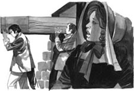
Four men came into the room with a long box.
'Now!' said a voice in Gertrude's ear. 'Now!'
But the young woman was half-dead with terror, and at first she could not move. Then she opened her eyes and came up to the table. She could hear other noises outside the room. There were more people coming.
Davies the hangman was by her side. He uncovered the body's face, took Gertrude's hand, and put her arm across the dead man's neck.
Gertrude screamed.
And at once there was a second scream. A woman's scream, but not Gertrude's. Gertrude turned round.
Behind her stood Rhoda Brook, her face pale, and her eyes red with crying. Behind Rhoda stood Gertrude's husband. He looked old and sad, but there were no tears in his eyes.
'You! What in God's name are you doing here?' he whispered angrily.
'Oh, cruel, cruel woman!' cried Rhoda. 'Why do you come between us and our child now? This is the true meaning of my dream! You are like that cruel phantom at last!'
When Gertrude saw her husband with Rhoda, she knew at once that the dead young man was Rhoda's son. She stared at Rhoda, with terror in her eyes.
Then Rhoda ran to Gertrude, closed her hand round the younger woman's arm, and pulled her away from the table. When she let go of the arm, the young wife fell down, at her husband's feet.
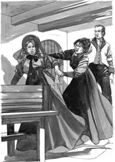
Rhoda ran to Gertrude, and pulled her away from the table.
She never opened her eyes again. They carried her out of the jail into the town, but she never got home alive. Perhaps it was the 'turning of the blood', perhaps it was her withered arm, perhaps it was her terror in the jail when she turned and saw Rhoda behind her. Doctors came and looked at her, but they could do nothing to help her, and three days later she died.
In those days the unhappy parents of a hanged man came and took the body away after the hanging. That was why Farmer Lodge was at the jail with Rhoda that day. It was not his first visit to the jail. With Rhoda, he went many times to visit his son that summer, and that was why he was away from the farm so often.
But after his young wife died, nobody ever saw Farmer Lodge in Casterbridge again. He went home to his farm, but he did not stay there long. After a short time he sold the farm and the farmhouse, and all the cows and sheep and horses. Then he went away to live in a small town by the sea. He lived very quietly, without any friends or family near him.
When he died two years later, he left a lot of money. Most of it went to a home for poor boys, but there was money for Rhoda Brook too.
For some time nobody could find Rhoda. Then one day she came back to her old house near the dairy. But she never took a penny of Farmer Lodge's money. She went back to work in the dairy, and worked there for many long years, milking the cows in the morning, and again in the evening. Her dark hair turned white, and her sad pale face looked thin and old.
Most people knew Rhoda's story, and sometimes they watched her at milking time. What did she think about, all those long days, at morning and evening milking?
But nobody ever asked her, and nobody ever knew the answer.
holiday n. leisure time away from work 节日，假日
veil n. a piece of material that a woman puts over her head and face 面纱
scream v. to make a loud high cry when you are afraid or hurt 尖叫
die v. to lose life 死
sell v. to give something to someone in exchange for money 售卖，出售
answer n. the reply to a question 回答，答案
6
血脉流转
周六十二点半，格特鲁德·洛奇走上山，来到了监狱。因为镇子上人太多，她是沿着隐蔽的小街来到这里的。人们都像过节似的赶来看绞刑。
一点钟的时候，她进到了监狱里面。刽子手把她带到一个黑洞洞的狭长房间，房间里有一张桌子。“在这儿等着，”他告诉她，“两三分钟，不会很久。”
刽子手走开了，格特鲁德等在那里。她的脸上遮着面纱，左胳膊露在外面，已经准备好。她一动不动地站着，双眼紧闭，侧耳倾听，怕得直发抖。
很快，她听到了嘈杂的声音，还有沉重的上楼梯声。沉重的脚步声越来越近，四个人抬着一只长条箱子走进了房间。箱子敞开着，里面是一个年轻人的尸体，脸上盖着块布。那几个人把箱子放在桌子上。
“快！”格特鲁德耳边传来一个声音，“快！”
可是这年轻的妇人已经吓得半死，一时间连动都不能动。过了一会儿，她才睁开眼睛来到桌子前。她听到房间外面还有声音，更多的人过来了。
刽子手戴维斯站在她旁边。他揭开了尸体脸上的布，抓着格特鲁德的手，把她的胳膊搭在那个死人的脖子上。
格特鲁德尖叫起来。
几乎在同时，又一声尖叫传来。也是一个女人的尖叫，但不是格特鲁德的声音。格特鲁德转过身来。
在她身后站着罗达·布鲁克，脸色惨白，眼睛哭得通红。罗达身后站着格特鲁德的丈夫。他看起来苍老而又悲伤，可是眼睛里却没有泪水。
“是你！你究竟来这儿干吗？”他愤怒地低声问道。
“啊，残忍啊，残忍的女人！”罗达哭喊着，“为什么现在来挡在我们和孩子之间？这才是我那个梦的真正含义！你到底变成了那个残忍的幻影！”
格特鲁德一看到她丈夫跟罗达在一起，立刻就明白了那个死去的年轻人是罗达的儿子。她注视着罗达，眼睛里充满了恐惧。
这时，罗达跑向格特鲁德，用手抓住年轻女人的胳膊，把她从桌子旁拉开。等到罗达把手松开，年轻夫人摔倒在丈夫的脚下。
她再也没有睁开眼睛。人们把她从监狱里抬到了镇上，而她却没能活着回家。或许是因为“血脉流转”，或许是因为萎缩的胳膊，又或许是因为在监狱中转身见到罗达时受到的惊吓。大夫来看过她，却无力回天，三天之后，她死了。
在那个年代，不幸的父母会到监狱来把被绞死的孩子的尸体带走。正因为如此，洛奇农场主和罗达那天才会出现在监狱中。这并不是洛奇农场主第一次去监狱。那年夏天，他和罗达到监狱去了很多次，去探望他们的儿子，这也正是他经常离开农场的原因。
然而，自从洛奇农场主年轻的妻子死后，再没有人在卡斯特桥见到过他。他回了农场，但没待多长时间。没过多久，他就卖掉了农场、农舍，以及所有的牛、羊和马。后来，他搬到海边的一个小镇居住。他悄无声息地活着，身边没有朋友，也没有家人。
两年之后他死了，留下了一大笔钱。大部分钱给了一家穷苦孩子的收容所，也有一点儿钱留给了罗达·布鲁克。
有一段时间，没人能找到罗达。后来有一天，她回到了奶牛场附近的老房子。可她没拿洛奇农场主的一分钱。她回到奶牛场工作，并且在那里干了很多年，每天早上挤一次牛奶，晚上再挤一次。她的黑发变成了白发，苍白忧伤的脸看起来瘦削而苍老。
大多数人都知道罗达的故事，有时还会在她挤牛奶的时候望望她。在那些漫长的日子里，每天早晚挤牛奶的时候，她在想些什么呢？
没有人问过她，也没有人知道答案。
血脉流转
6
The blood turns
At half past twelve on Saturday Gertrude Lodge walked up the hill to the jail. She went there by the small back streets, because there were so many people in the town. They were there for a holiday, to watch the hanging.
At one o'clock she was inside the jail. The hangman took her to a long dark room with a table. 'Wait there,' he told her.'Two or three minutes, no more.'
He went away, and Gertrude waited. She had a veil over her face, and her left arm was uncovered, ready. She stood still, with her eyes closed, listening, and shivering with terror.
Soon she heard noises, and could hear heavy feet on the stairs. The heavy feet came nearer, and four men came into the room with a long box. It was open, and in it was the body of a young man, with a cover over his face. The men put the box down on the table.
Four men came into the room with a long box.
'Now!' said a voice in Gertrude's ear. 'Now!'
But the young woman was half-dead with terror, and at first she could not move. Then she opened her eyes and came up to the table. She could hear other noises outside the room. There were more people coming.
Davies the hangman was by her side. He uncovered the body's face, took Gertrude's hand, and put her arm across the dead man's neck.
Gertrude screamed.
And at once there was a second scream. A woman's scream, but not Gertrude's. Gertrude turned round.
Behind her stood Rhoda Brook, her face pale, and her eyes red with crying. Behind Rhoda stood Gertrude's husband. He looked old and sad, but there were no tears in his eyes.
'You! What in God's name are you doing here?' he whispered angrily.
'Oh, cruel, cruel woman!' cried Rhoda. 'Why do you come between us and our child now? This is the true meaning of my dream! You are like that cruel phantom at last!'
When Gertrude saw her husband with Rhoda, she knew at once that the dead young man was Rhoda's son. She stared at Rhoda, with terror in her eyes.
Then Rhoda ran to Gertrude, closed her hand round the younger woman's arm, and pulled her away from the table. When she let go of the arm, the young wife fell down, at her husband's feet.
Rhoda ran to Gertrude, and pulled her away from the table.
She never opened her eyes again. They carried her out of the jail into the town, but she never got home alive. Perhaps it was the 'turning of the blood', perhaps it was her withered arm, perhaps it was her terror in the jail when she turned and saw Rhoda behind her. Doctors came and looked at her, but they could do nothing to help her, and three days later she died.
In those days the unhappy parents of a hanged man came and took the body away after the hanging. That was why Farmer Lodge was at the jail with Rhoda that day. It was not his first visit to the jail. With Rhoda, he went many times to visit his son that summer, and that was why he was away from the farm so often.
But after his young wife died, nobody ever saw Farmer Lodge in Casterbridge again. He went home to his farm, but he did not stay there long. After a short time he sold the farm and the farmhouse, and all the cows and sheep and horses. Then he went away to live in a small town by the sea. He lived very quietly, without any friends or family near him.
When he died two years later, he left a lot of money. Most of it went to a home for poor boys, but there was money for Rhoda Brook too.
For some time nobody could find Rhoda. Then one day she came back to her old house near the dairy. But she never took a penny of Farmer Lodge's money. She went back to work in the dairy, and worked there for many long years, milking the cows in the morning, and again in the evening. Her dark hair turned white, and her sad pale face looked thin and old.
Most people knew Rhoda's story, and sometimes they watched her at milking time. What did she think about, all those long days, at morning and evening milking?
But nobody ever asked her, and nobody ever knew the answer.
holiday n. leisure time away from work 节日，假日
veil n. a piece of material that a woman puts over her head and face 面纱
scream v. to make a loud high cry when you are afraid or hurt 尖叫
die v. to lose life 死
sell v. to give something to someone in exchange for money 售卖，出售
answer n. the reply to a question 回答，答案
6
血脉流转
周六十二点半，格特鲁德·洛奇走上山，来到了监狱。因为镇子上人太多，她是沿着隐蔽的小街来到这里的。人们都像过节似的赶来看绞刑。
一点钟的时候，她进到了监狱里面。刽子手把她带到一个黑洞洞的狭长房间，房间里有一张桌子。“在这儿等着，”他告诉她，“两三分钟，不会很久。”
刽子手走开了，格特鲁德等在那里。她的脸上遮着面纱，左胳膊露在外面，已经准备好。她一动不动地站着，双眼紧闭，侧耳倾听，怕得直发抖。
很快，她听到了嘈杂的声音，还有沉重的上楼梯声。沉重的脚步声越来越近，四个人抬着一只长条箱子走进了房间。箱子敞开着，里面是一个年轻人的尸体，脸上盖着块布。那几个人把箱子放在桌子上。
“快！”格特鲁德耳边传来一个声音，“快！”
可是这年轻的妇人已经吓得半死，一时间连动都不能动。过了一会儿，她才睁开眼睛来到桌子前。她听到房间外面还有声音，更多的人过来了。
刽子手戴维斯站在她旁边。他揭开了尸体脸上的布，抓着格特鲁德的手，把她的胳膊搭在那个死人的脖子上。
格特鲁德尖叫起来。
几乎在同时，又一声尖叫传来。也是一个女人的尖叫，但不是格特鲁德的声音。格特鲁德转过身来。
在她身后站着罗达·布鲁克，脸色惨白，眼睛哭得通红。罗达身后站着格特鲁德的丈夫。他看起来苍老而又悲伤，可是眼睛里却没有泪水。
“是你！你究竟来这儿干吗？”他愤怒地低声问道。
“啊，残忍啊，残忍的女人！”罗达哭喊着，“为什么现在来挡在我们和孩子之间？这才是我那个梦的真正含义！你到底变成了那个残忍的幻影！”
格特鲁德一看到她丈夫跟罗达在一起，立刻就明白了那个死去的年轻人是罗达的儿子。她注视着罗达，眼睛里充满了恐惧。
这时，罗达跑向格特鲁德，用手抓住年轻女人的胳膊，把她从桌子旁拉开。等到罗达把手松开，年轻夫人摔倒在丈夫的脚下。
她再也没有睁开眼睛。人们把她从监狱里抬到了镇上，而她却没能活着回家。或许是因为“血脉流转”，或许是因为萎缩的胳膊，又或许是因为在监狱中转身见到罗达时受到的惊吓。大夫来看过她，却无力回天，三天之后，她死了。
在那个年代，不幸的父母会到监狱来把被绞死的孩子的尸体带走。正因为如此，洛奇农场主和罗达那天才会出现在监狱中。这并不是洛奇农场主第一次去监狱。那年夏天，他和罗达到监狱去了很多次，去探望他们的儿子，这也正是他经常离开农场的原因。
然而，自从洛奇农场主年轻的妻子死后，再没有人在卡斯特桥见到过他。他回了农场，但没待多长时间。没过多久，他就卖掉了农场、农舍，以及所有的牛、羊和马。后来，他搬到海边的一个小镇居住。他悄无声息地活着，身边没有朋友，也没有家人。
两年之后他死了，留下了一大笔钱。大部分钱给了一家穷苦孩子的收容所，也有一点儿钱留给了罗达·布鲁克。
有一段时间，没人能找到罗达。后来有一天，她回到了奶牛场附近的老房子。可她没拿洛奇农场主的一分钱。她回到奶牛场工作，并且在那里干了很多年，每天早上挤一次牛奶，晚上再挤一次。她的黑发变成了白发，苍白忧伤的脸看起来瘦削而苍老。
大多数人都知道罗达的故事，有时还会在她挤牛奶的时候望望她。在那些漫长的日子里，每天早晚挤牛奶的时候，她在想些什么呢？
没有人问过她，也没有人知道答案。
ACTIVITIES: Before Reading
ACTIVITIES
Before Reading
1 Read the story introduction of the book, and the back cover. What do you know now about the story? Tick one box for each sentence.
1) Farmer Lodge marries his first love.
YES □／NO □
2) Farmer Lodge is married.
YES □／NO □
3) Only one of the women works.
YES □／NO □
4) One of the women has a child.
YES □／NO □
5) The arm is withered because of an accident.
YES □／NO □
6) The withered arm gets worse and worse.
YES □／NO □
7) The withered arm has the marks of teeth on it.
YES □／NO □
2 What can you guess about the people in this story? Use this table to make some sentences.
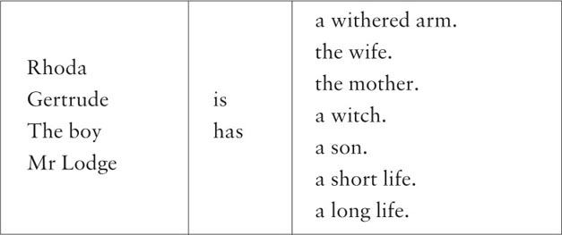
ACTIVITIES: While Reading
ACTIVITIES
While Reading
1 Read Chapters 1 and 2, then circle the correct words in each sentence.
1) The farmer's new wife was Gertrude / Rhoda.
2) The boy lived with his mother / father.
3) The boy met Farmer Lodge and his wife at the farm /on the road / at his house.
4) Rhoda was younger / older and taller / shorter than Gertrude.
5) In her dream Rhoda saw a phantom of Farmer Lodge /Gertrude.
6) Rhoda met Gertrude before / after the dream.
7) To Rhoda, Gertrude looked like a friend / an enemy.
8) On Gertrude's right / left arm, there were marks made by teeth /fingers.
2 How do you feel about the people in the story? Put a circle round one answer for each person.
Do you feel sorry for...
| 1) Rhoda? | yes / a little / no |
| 2) the boy? | yes / a little / no |
| 3) Gertrude? | yes / a little / no |
| 4) Mr Lodge? | yes / a little / no |
3 Before you read Chapter 3, can you guess what happens? Choose some of these answers.
1) Gertrude's arm does not get better.
2) Farmer Lodge calls Rhoda a witch.
3) Farmer Lodge begins to love Gertrude less.
4) Farmer Lodge leaves his wife.
5) Gertrude asks Rhoda for help.
6) Gertrude sees the face of her enemy.
7) Rhoda tells Gertrude about her dream.
8) Rhoda's son goes to live with his father and Gertrude.
9) Rhoda and her son leave their house and go away.
4 Read Chapters 3 and 4, then put these sentences in the correct order for the story. Begin with number 5.
1) Gertrude asked the country people about hanging.
2) Things were different between Gertrude and Rhoda.
3) Gertrude went to see Mr Trendle again.
4) Farmer Lodge went away for three nights.
5) Rhoda and Gertrude went to see Mr Trendle.
6) People began to call Rhoda a witch.
7) Gertrude learnt about a hanging in July in Casterbridge.
8) Rhoda left her house and went away.
9) Gertrude saw a face in the glass.
10) Six years went by and Gertrude's arm was still withered.
11) Mr Trendle told Gertrude about the best cure for a curse.
5 Before you read Chapter 5, can you guess what happens? Choose one ending for each sentence.
1) Gertrude...
a) meets one of her husband's friends on the road.
b) meets Farmer Lodge in Casterbridge.
c) meets the hangman in Casterbridge.
2) Mr Lodge...
a) returns home the next day before Gertrude leaves.
b) goes away to meet Rhoda Brook somewhere.
c) stops Gertrude going to Casterbridge.
6 Read Chapter 5. You are Gertrude's friend. What do you say to her about tomorrow? Choose one idea.
1) 'Go to the jail.'
2) 'Don't go to the jail.'
3) 'Go home.'
4) 'Go to church.'
7 Before you read Chapter 6, look at these ideas. Can you guess how many are true? Choose as many as you like.
After Gertrude puts her arm on the hanged man's neck...
1)... the hangman asks her for a lot more money.
2)... she sees the hanged man's mother behind her.
3)... her withered arm gets better at once.
4)... her hair turns white.
5)... she dies three days later.
6)... she goes home and lives happily with her husband.
ACTIVITIES: After Reading
ACTIVITIES
After Reading
1 Use the clues below to complete this crossword with words from the story. Then find the hidden seven-letter word in the crossword.
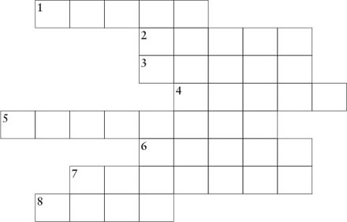
1) Perhaps a _____ put her hand on Gertrude's arm.
2) Rhoda worked in a _____, milking the cows.
3) Rhoda thought, 'Gertrude is a friend, not an _____.'
4) Mr Trendle put water and the white of an egg in a _____.
5) When Rhoda saw Gertrude at the jail, she _____.
6) On Gertrude's arm there were some yellowy-brown _____.
7) In Rhoda's dream a _____ sat on her body.
8) Gertrude hoped to find a _____ for her arm at the jail.
The hidden word in the crossword is _____.
2 Farmer Lodge and Gertrude never talked about Rhoda and her son – but imagine that they did. Here are five questions for Gertrude to ask, and ten answers for Mr Lodge. Match two answers to each question.
1) Why didn't you marry Rhoda?
2) Why did you stop loving her?
3) Why did she stay when I came?
4) Why didn't you help your son?
5) Why didn't you tell me about her?
6) Because she did not have much money, and she had work and a house here.
7) Because she was only a milkmaid.
8) Because it was a long time ago, and it wasn't important.
9) Because I was young, and young love soon dies.
10) Because his mother didn't want my money.
11) Because I wanted my wife to be rich and from a good family.
12) Because I wanted you to be happy.
13) Because I wanted somebody new.
14) Because she was interested in my new wife.
15) Because he had food, and a place to live, so I didn't think about him.
Now look at the two answers for each question. Choose the best answer for Farmer Lodge, and explain why you think that answer is best.
3 Here is a new illustration for the story. Find the best place in the story to put the picture, and answer these questions.
The picture goes in Chapter _____.
1) Who are the two people in the picture?
2) What are they talking about?
3) What does the woman do the next day?
Now write a caption for the illustration.
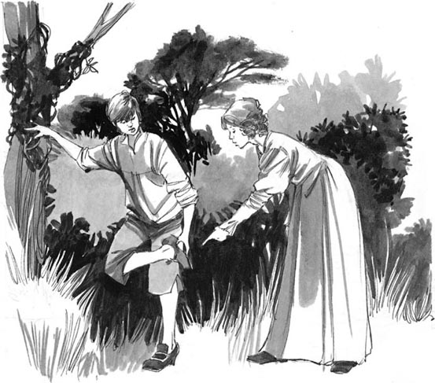
Caption:__________________
4 Here are two different endings for the story. Use these words to fill in the gaps.
better, die, dies, dream, fingers, happy, many, marries, phantom, sees, together
1) Gertrude does not _____ and her arm gets _____. She and Mr Lodge live _____ for many years and they have ____ children. Nobody ever _____ Rhoda again.
2) After Gertrude _____, Mr Lodge _____ Rhoda, but they are not _____. One night Rhoda has another _____ about a_____, and the next day Mr Lodge sees the marks of _____ on his arm...
Which ending do you like best – the ending of the story in the book, or one of the endings above? Why?
5 How did you feel about the people in this story? Use these names, and complete the sentences in your own words.
Rhoda / Gertrude / the boy / Mr Lodge
1) I felt most sorry for _____ because __________.
2) I did not feel sorry for _____ because __________.
3) I also felt sorry for _____ because __________.
6 Some people believe that there are things like phantoms and witches and wise men. Why is that, do you think? Do you believe in them?
封底
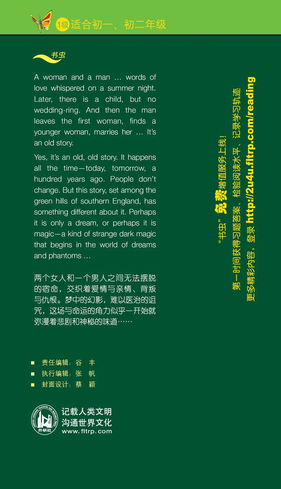